Last updated: 2022-06-08
Checks: 7 0
Knit directory: Denit_visualization_R/
This reproducible R Markdown analysis was created with workflowr (version 1.6.2). The Checks tab describes the reproducibility checks that were applied when the results were created. The Past versions tab lists the development history.
Great! Since the R Markdown file has been committed to the Git repository, you know the exact version of the code that produced these results.
Great job! The global environment was empty. Objects defined in the global environment can affect the analysis in your R Markdown file in unknown ways. For reproduciblity it’s best to always run the code in an empty environment.
The command set.seed(20210924) was run prior to running the code in the R Markdown file. Setting a seed ensures that any results that rely on randomness, e.g. subsampling or permutations, are reproducible.
Great job! Recording the operating system, R version, and package versions is critical for reproducibility.
Nice! There were no cached chunks for this analysis, so you can be confident that you successfully produced the results during this run.
Great job! Using relative paths to the files within your workflowr project makes it easier to run your code on other machines.
Great! You are using Git for version control. Tracking code development and connecting the code version to the results is critical for reproducibility.
The results in this page were generated with repository version 7905c93. See the Past versions tab to see a history of the changes made to the R Markdown and HTML files.
Note that you need to be careful to ensure that all relevant files for the analysis have been committed to Git prior to generating the results (you can use wflow_publish or wflow_git_commit). workflowr only checks the R Markdown file, but you know if there are other scripts or data files that it depends on. Below is the status of the Git repository when the results were generated:
Ignored files:
Ignored: .Rhistory
Ignored: .Rproj.user/
Untracked files:
Untracked: 211020_df_full_innate.xlsx
Untracked: 220421_Griess_antibiotics_experiment_to_kyle_remove_blanks.xlsx
Untracked: 220421_Griess_antibiotics_experiment_to_kyle_remove_blanks_add_pH.xlsx
Untracked: 220421_Griess_antibiotics_experiment_to_kyle_w_autoclaved.xlsx
Untracked: 220422_pH_Antibiotics_Sterile_experiment.xlsx
Untracked: 220519_Griess_antibiotics_experiment_to_kyle_w_autoclaved.xlsx
Untracked: 220521_pH_Antibiotics_dose_effect_experiment.xlsx
Untracked: data/120321_soil_buffering_capacity_Nichols-B.xlsx
Untracked: data/210911_TOC_sample_plate1.xlsx
Untracked: data/210922_Griess_sample_plate1-investigating.xlsx
Untracked: data/210922_Griess_sample_plate1.xlsx
Untracked: data/210927_TOC_sample_plate1_100ul.xlsx
Untracked: data/210927_TOC_sample_plate1_10ul.xlsx
Untracked: data/210928_Griess_sample_plate1.xlsx
Untracked: data/211005_Griess_sample_plate1.xlsx
Untracked: data/211007_Griess_blank_plate1.xlsx
Untracked: data/211007_Griess_blank_plate2.xlsx
Untracked: data/211008_Griess_blank_plate0.xlsx
Untracked: data/211008_Griess_blank_plate1.xlsx
Untracked: data/211017_Griess_plate0.xlsx
Untracked: data/211017_Griess_plate1.xlsx
Untracked: data/211017_Griess_plate2.xlsx
Untracked: data/211017_Griess_plate3.xlsx
Untracked: data/211017_Griess_plate4.xlsx
Untracked: data/211017_Griess_plate5.xlsx
Untracked: data/211017_Griess_plate6.xlsx
Untracked: data/211017_Griess_plate7.xlsx
Untracked: data/211017_Griess_plate8.xlsx
Untracked: data/211019_Griess_plate1.xlsx
Untracked: data/211020_Griess_plate0.xlsx
Untracked: data/211020_Griess_plate1.xlsx
Untracked: data/211020_df_full_innate.xlsx
Untracked: data/211025_Griess_no3_fit_plate0.xlsx
Untracked: data/211025_Griess_no3_fit_plate1.xlsx
Untracked: data/211025_Griess_plate0.xlsx
Untracked: data/211025_Griess_plate1.xlsx
Untracked: data/211028_Griess_plate1.xlsx
Untracked: data/211028_Griess_plate1_no3_fit.xlsx
Untracked: data/211028_Griess_plate2.xlsx
Untracked: data/211028_Griess_plate2_no3_fit.xlsx
Untracked: data/211028_Griess_plate3.xlsx
Untracked: data/211028_Griess_plate3_no3_fit.xlsx
Untracked: data/211028_Griess_plate4.xlsx
Untracked: data/211028_Griess_plate4_no3_fit.xlsx
Untracked: data/211028_time_table.xlsx
Untracked: data/211127_Griess_SUP1.xlsx
Untracked: data/211127_Griess_SUP11.xlsx
Untracked: data/211127_Griess_SUP3.xlsx
Untracked: data/211127_Griess_SUP5.xlsx
Untracked: data/211127_Griess_SUP7.xlsx
Untracked: data/211127_Griess_SUP9.xlsx
Untracked: data/211127_Griess_plate0.xlsx
Untracked: data/211127_time_table.xlsx
Untracked: data/211128_Ammonia_sample_plate10.xlsx
Untracked: data/211128_Ammonia_sample_plate11.xlsx
Untracked: data/211128_Griess_plate1.xlsx
Untracked: data/211128_Griess_plate10.xlsx
Untracked: data/211128_Griess_plate11.xlsx
Untracked: data/211128_Griess_plate2.xlsx
Untracked: data/211128_Griess_plate3.xlsx
Untracked: data/211128_Griess_plate4.xlsx
Untracked: data/211128_Griess_plate5.xlsx
Untracked: data/211128_Griess_plate6.xlsx
Untracked: data/211128_Griess_plate7.xlsx
Untracked: data/211128_Griess_plate8.xlsx
Untracked: data/211128_Griess_plate9.xlsx
Untracked: data/211128_time_table.xlsx
Untracked: data/211201_pH_colorimetric.xlsx
Untracked: data/211203_slurry_vs_water_drying_table.xlsx
Untracked: data/211203_slurry_vs_water_drying_time.xlsx
Untracked: data/211208_pH_colorimetric_T3.xlsx
Untracked: data/211208_pH_colorimetric_T4.xlsx
Untracked: data/211208_pH_colorimetric_T5.xlsx
Untracked: data/211208_pH_colorimetric_plate1.xlsx
Untracked: data/211208_pH_colorimetric_plate2.xlsx
Untracked: data/211208_pH_colorimetric_plate3.xlsx
Untracked: data/211208_time_table.xlsx
Untracked: data/211209_OD600_T1.xlsx
Untracked: data/211209_OD600_T2.xlsx
Untracked: data/211209_OD600_T3.xlsx
Untracked: data/211209_time_table.xlsx
Untracked: data/211210_pH_colorimetric_T0.xlsx
Untracked: data/211210_pH_colorimetric_T1.xlsx
Untracked: data/211210_pH_colorimetric_T2.xlsx
Untracked: data/211210_pH_colorimetric_T3.xlsx
Untracked: data/211210_time_table.xlsx
Untracked: data/211218_pH_colorimetric_t0.xlsx
Untracked: data/211218_pH_colorimetric_t1.xlsx
Untracked: data/211218_pH_colorimetric_t2.xlsx
Untracked: data/211218_pH_colorimetric_t3.xlsx
Untracked: data/211218_pH_colorimetric_t4.xlsx
Untracked: data/211218_time_table.xlsx
Untracked: data/211220_Griess_plate1.xlsx
Untracked: data/211220_Griess_plate10.xlsx
Untracked: data/211220_Griess_plate11.xlsx
Untracked: data/211220_Griess_plate2.xlsx
Untracked: data/211220_Griess_plate3.xlsx
Untracked: data/211220_Griess_plate4.xlsx
Untracked: data/211220_Griess_plate5.xlsx
Untracked: data/211220_Griess_plate6.xlsx
Untracked: data/211220_Griess_plate7.xlsx
Untracked: data/211220_Griess_plate8.xlsx
Untracked: data/211220_Griess_plate9.xlsx
Untracked: data/211220_time_table_AU.xlsx
Untracked: data/211220_time_table_BN.xlsx
Untracked: data/211224_TOC_sample_plate1.xlsx
Untracked: data/220103_Griess_T0.xlsx
Untracked: data/220103_Griess_T1.xlsx
Untracked: data/220103_Griess_T11.xlsx
Untracked: data/220103_Griess_T12.xlsx
Untracked: data/220103_Griess_T2.xlsx
Untracked: data/220103_Griess_T3.xlsx
Untracked: data/220103_Griess_T4.xlsx
Untracked: data/220103_Griess_T5.xlsx
Untracked: data/220103_Griess_T6.xlsx
Untracked: data/220103_Griess_T7.xlsx
Untracked: data/220103_Griess_T8.xlsx
Untracked: data/220103_Griess_T9.xlsx
Untracked: data/220103_time_table.xlsx
Untracked: data/220106_Ammonia_sample_plate1.xlsx
Untracked: data/220107-2_Ammonia_sample_plate1.xlsx
Untracked: data/220107-3_Ammonia_sample_plate1.xlsx
Untracked: data/220107-4_Ammonia_sample_plate1.xlsx
Untracked: data/220107-5_Ammonia_sample_plate1.xlsx
Untracked: data/220107-6_Ammonia_sample_plate1.xlsx
Untracked: data/220107-7_Ammonia_sample_plate1.xlsx
Untracked: data/220107-8_Ammonia_sample_plate1.xlsx
Untracked: data/220107-9_Ammonia_sample_plate1.xlsx
Untracked: data/220107_Ammonia_sample_plate1.xlsx
Untracked: data/220108_Ammonia_sample_plate1.xlsx
Untracked: data/220110_Ammonia_sample_plate1.xlsx
Untracked: data/220110_Ammonia_sample_plate2.xlsx
Untracked: data/220111_Ammonia_sample_T0.xlsx
Untracked: data/220111_Ammonia_sample_T1.xlsx
Untracked: data/220111_Ammonia_sample_T2.xlsx
Untracked: data/220111_Ammonia_sample_T3.xlsx
Untracked: data/220111_TOC_sample_plate1.xlsx
Untracked: data/220112_Ammonia_sample_T11.xlsx
Untracked: data/220112_Ammonia_sample_T12.xlsx
Untracked: data/220112_Ammonia_sample_T4.xlsx
Untracked: data/220112_Ammonia_sample_T5.xlsx
Untracked: data/220112_Ammonia_sample_T6.xlsx
Untracked: data/220112_Ammonia_sample_T7.xlsx
Untracked: data/220112_Ammonia_sample_T8.xlsx
Untracked: data/220112_Ammonia_sample_T9.xlsx
Untracked: data/220113_pH_colorimetric_T0.xlsx
Untracked: data/220113_pH_colorimetric_T12.xlsx
Untracked: data/220113_pH_colorimetric_T2.xlsx
Untracked: data/220113_pH_colorimetric_T3.xlsx
Untracked: data/220113_pH_colorimetric_T8.xlsx
Untracked: data/220125_pH_colorimetric_pH1_mu_opt0.099.xlsx
Untracked: data/220125_pH_colorimetric_pH1_using6.66.xlsx
Untracked: data/220125_pH_colorimetric_pH2_mu_opt0.099.xlsx
Untracked: data/220125_pH_colorimetric_pH2_using6.66.xlsx
Untracked: data/220125_time_table.xlsx
Untracked: data/220128_Ammonia_sample_plate1.xlsx
Untracked: data/220128_Ammonia_sample_plate2.xlsx
Untracked: data/220128_Ammonia_sample_plate3.xlsx
Untracked: data/220128_Ammonia_sample_plate4.xlsx
Untracked: data/220128_Ammonia_sample_plate5.xlsx
Untracked: data/220128_Ammonia_sample_plate6.xlsx
Untracked: data/220128_Griess_plate1.xlsx
Untracked: data/220128_Griess_plate2.xlsx
Untracked: data/220128_Griess_plate3.xlsx
Untracked: data/220128_Griess_plate4.xlsx
Untracked: data/220128_Griess_plate5.xlsx
Untracked: data/220128_Griess_plate6.xlsx
Untracked: data/220128_time_table.xlsx
Untracked: data/220131_Ammonia_sample_plate1.xlsx
Untracked: data/220131_Ammonia_sample_plate2.xlsx
Untracked: data/220131_Ammonia_sample_plate3.xlsx
Untracked: data/220131_Ammonia_sample_plate4.xlsx
Untracked: data/220131_Ammonia_sample_plate5.xlsx
Untracked: data/220131_Ammonia_sample_plate6.xlsx
Untracked: data/220131_Griess_plate1.xlsx
Untracked: data/220131_Griess_plate2.xlsx
Untracked: data/220131_Griess_plate3.xlsx
Untracked: data/220131_Griess_plate4.xlsx
Untracked: data/220131_Griess_plate5.xlsx
Untracked: data/220131_Griess_plate6.xlsx
Untracked: data/220131_pH_colorimetric_pH1_mu_opt_T0.xlsx
Untracked: data/220131_pH_colorimetric_pH2_mu_opt_T0.xlsx
Untracked: data/220131_time_table.xlsx
Untracked: data/220327_Griess_pastplate9.xlsx
Untracked: data/220327_Griess_plate1.xlsx
Untracked: data/220327_Griess_plate10.xlsx
Untracked: data/220327_Griess_plate11.xlsx
Untracked: data/220327_Griess_plate12.xlsx
Untracked: data/220327_Griess_plate13.xlsx
Untracked: data/220327_Griess_plate14.xlsx
Untracked: data/220327_Griess_plate15.xlsx
Untracked: data/220327_Griess_plate16.xlsx
Untracked: data/220327_Griess_plate2.xlsx
Untracked: data/220327_Griess_plate3.xlsx
Untracked: data/220327_Griess_plate4.xlsx
Untracked: data/220327_Griess_plate5.xlsx
Untracked: data/220327_Griess_plate6.xlsx
Untracked: data/220327_Griess_plate7.xlsx
Untracked: data/220327_Griess_plate8.xlsx
Untracked: data/220327_Griess_plate9.xlsx
Untracked: data/220327_time_table.xlsx
Untracked: data/220329_pH_colorimetric_pH1_mu_opt_T0.xlsx
Untracked: data/220329_pH_colorimetric_pH2_mu_opt_T0.xlsx
Untracked: data/220329_pH_colorimetric_pH3_mu_opt_T0.xlsx
Untracked: data/220329_pH_colorimetric_pH4_mu_opt_T0.xlsx
Untracked: data/220329_pH_colorimetric_pH6_mu_opt_T0.xlsx
Untracked: data/220329_pH_colorimetric_pH7_mu_opt_T0.xlsx
Untracked: data/220407_pH_colorimetric_pH3_half_mu_opt_T0.xlsx
Untracked: data/220407_pH_colorimetric_pH_base_treatment_mu_opt_T0.xlsx
Untracked: data/220407_pH_colorimetric_pH_standard_150ul_mu_opt_T0.xlsx
Untracked: data/220407_pH_colorimetric_pH_standard_300ul_mu_opt_T0.xlsx
Untracked: data/220407_pH_colorimetric_pH_standard_60ul_mu_opt_T0.xlsx
Untracked: data/220408_pH_colorimetric_pH_limit_mu_opt_water.xlsx
Untracked: data/220412_pH_colorimetric_pH_half_mu_opt_WW.xlsx
Untracked: data/220414_Ammonia_sample_plate0.xlsx
Untracked: data/220418_Ammonia_sample_plate0.xlsx
Untracked: data/220419_Ammonia_sample_plate0.xlsx
Untracked: data/220420-2_Ammonia_bcf.xlsx
Untracked: data/220420_Ammonia_sample_plate1.xlsx
Untracked: data/220420_Ammonia_sample_plate10.xlsx
Untracked: data/220420_Ammonia_sample_plate11.xlsx
Untracked: data/220420_Ammonia_sample_plate12.xlsx
Untracked: data/220420_Ammonia_sample_plate13.xlsx
Untracked: data/220420_Ammonia_sample_plate14.xlsx
Untracked: data/220420_Ammonia_sample_plate15.xlsx
Untracked: data/220420_Ammonia_sample_plate16.xlsx
Untracked: data/220420_Ammonia_sample_plate2.xlsx
Untracked: data/220420_Ammonia_sample_plate3.xlsx
Untracked: data/220420_Ammonia_sample_plate4.xlsx
Untracked: data/220420_Ammonia_sample_plate5.xlsx
Untracked: data/220420_Ammonia_sample_plate6.xlsx
Untracked: data/220420_Ammonia_sample_plate7.xlsx
Untracked: data/220420_Ammonia_sample_plate8.xlsx
Untracked: data/220420_Ammonia_sample_plate9.xlsx
Untracked: data/220421_Ammonia_df_a_bcf.xlsx
Untracked: data/220421_Ammonia_df_pH_range.xlsx
Untracked: data/220421_Ammonia_sample_plate1.xlsx
Untracked: data/220421_Ammonia_sample_plate10.xlsx
Untracked: data/220421_Ammonia_sample_plate11.xlsx
Untracked: data/220421_Ammonia_sample_plate2.xlsx
Untracked: data/220421_Ammonia_sample_plate3.xlsx
Untracked: data/220421_Ammonia_sample_plate4.xlsx
Untracked: data/220421_Ammonia_sample_plate5.xlsx
Untracked: data/220421_Ammonia_sample_plate6.xlsx
Untracked: data/220421_Ammonia_sample_plate7.xlsx
Untracked: data/220421_Ammonia_sample_plate8.xlsx
Untracked: data/220421_Ammonia_sample_plate9.xlsx
Untracked: data/220421_Ammonia_sterile.xlsx
Untracked: data/220421_Griess_antibiotics_experiment_to_kyle_remove_blanks.xlsx
Untracked: data/220421_Griess_antibiotics_experiment_to_kyle_remove_blanks_add_pH.xlsx
Untracked: data/220421_Griess_plate1.xlsx
Untracked: data/220421_Griess_plate10.xlsx
Untracked: data/220421_Griess_plate11.xlsx
Untracked: data/220421_Griess_plate2.xlsx
Untracked: data/220421_Griess_plate3.xlsx
Untracked: data/220421_Griess_plate4.xlsx
Untracked: data/220421_Griess_plate5.xlsx
Untracked: data/220421_Griess_plate6.xlsx
Untracked: data/220421_Griess_plate7.xlsx
Untracked: data/220421_Griess_plate8.xlsx
Untracked: data/220421_Griess_plate9.xlsx
Untracked: data/220421_nitrate_reduced_autoclaved_samples.xlsx
Untracked: data/220421_time_table.xlsx
Untracked: data/220422_pH_Antibiotics_Sterile_experiment.xlsx
Untracked: data/220422_pH_colorimetric_LBA_Sterile_T0_mu_opt_T0.xlsx
Untracked: data/220422_pH_colorimetric_LBA_Sterile_T4_mu_opt_T0.xlsx
Untracked: data/220422_pH_colorimetric_LBA_Sterile_T4_mu_opt_T4.xlsx
Untracked: data/220422_pH_colorimetric_LBA_Sterile_T7_mu_opt_T0.xlsx
Untracked: data/220422_pH_colorimetric_LBA_Sterile_T7_mu_opt_T7.xlsx
Untracked: data/220422_pH_colorimetric_LBA_Sterile_T9_mu_opt_T0.xlsx
Untracked: data/220422_pH_colorimetric_LBA_Sterile_T9_mu_opt_T9.xlsx
Untracked: data/220508_TOC_sample_plate1.xlsx
Untracked: data/220513_TOC_sample_plate1.xlsx
Untracked: data/220513_TOC_sample_plate2.xlsx
Untracked: data/220513_TOC_sample_plate3.xlsx
Untracked: data/220517_time_table.xlsx
Untracked: data/220519_Griess_antibiotics_dose_experiment_remove_blanks.xlsx
Untracked: data/220519_Griess_crerar7_extreme.xlsx
Untracked: data/220519_Griess_plate1.xlsx
Untracked: data/220519_Griess_plate10.xlsx
Untracked: data/220519_Griess_plate11.xlsx
Untracked: data/220519_Griess_plate2.xlsx
Untracked: data/220519_Griess_plate3.xlsx
Untracked: data/220519_Griess_plate4.xlsx
Untracked: data/220519_Griess_plate5.xlsx
Untracked: data/220519_Griess_plate6.xlsx
Untracked: data/220519_Griess_plate7.xlsx
Untracked: data/220519_Griess_plate8.xlsx
Untracked: data/220519_Griess_plate9.xlsx
Untracked: data/220519_time_table.xlsx
Untracked: data/220520_TOC_sample_plate1.xlsx
Untracked: data/220520_TOC_sample_plate2.xlsx
Untracked: data/220520_TOC_sample_plate3.xlsx
Untracked: data/220521_pH_Antibiotics_dose_effect_experiment.xlsx
Untracked: data/220521_pH_colorimetric_Barneveld2_Sterile_T0_mu_opt_T0.xlsx
Untracked: data/220521_pH_colorimetric_Barneveld2_Sterile_T10_mu_opt_T0.xlsx
Untracked: data/220521_pH_colorimetric_Barneveld2_Sterile_T7_mu_opt_T0.xlsx
Untracked: data/220526_TOC_sample_plate1.xlsx
Untracked: data/220527_TOC_sample_plate1.xlsx
Untracked: data/220601_TOC_sample_plate1.xlsx
Untracked: data/220602-2_TOC_sample_plate1.xlsx
Untracked: data/220602-2_control_OD600.xlsx
Untracked: data/220602-3_TOC_sample_plate1.xlsx
Untracked: data/220602-3_control_OD600.xlsx
Untracked: data/220602_TOC_sample_plate1.xlsx
Untracked: data/220603_100ul_OD600.xlsx
Untracked: data/220603_TOC_sample_plate1.xlsx
Untracked: data/220603_TOC_sample_plate2.xlsx
Untracked: data/220606_TOC_sample_plate1.xlsx
Untracked: data/220606_TOC_sample_plate2.xlsx
Untracked: data/ForKiseok_from_Dr_Cuhel.xlsx
Untracked: data/ForKiseok_from_Dr_Cuhel_format_edited.xlsx
Untracked: data/OD434_OD585_C_WB_T5_220329.xlsx
Untracked: data/OD434_OD585_WW_C_T0_220329.xlsx
Untracked: data/OD434_OD585_pH3_half_area_220407.xlsx
Untracked: data/OD434_OD585_pH_base_treated_T0_220407.xlsx
Untracked: data/OD434_OD585_pH_half_150ul_220412.xlsx
Untracked: data/SPNa_86437_021122_edit.xlsx
Untracked: data/SPNa_86437_021122_edit2.xlsx
Untracked: data/TOC_TN_measurement_2_labs_211014.xlsx
Untracked: data/dry_weight_curve(9.5.21).xlsx
Untracked: data/pH_data(11.17.21)-Midway_etc.xlsx
Untracked: data/pH_data(12.6.21)-Midway_incubation_endpoint.xlsx
Untracked: data/pH_data(9.14.21).xlsx
Untracked: data/pH_data(9.28.21).xlsx
Untracked: data/pH_standard_150ul_220407.xlsx
Untracked: data/pH_standard_300ul_220407.xlsx
Untracked: data/pH_standard_60ul_220407.xlsx
Untracked: data/~$220513_TOC_sample_plate1.xlsx
Untracked: data/~$SPNa_86437_021122_edit.xlsx
Untracked: past_figures/
Note that any generated files, e.g. HTML, png, CSS, etc., are not included in this status report because it is ok for generated content to have uncommitted changes.
These are the previous versions of the repository in which changes were made to the R Markdown (analysis/220520_TOC_antibiotics_dose_effect.Rmd) and HTML (docs/220520_TOC_antibiotics_dose_effect.html) files. If you’ve configured a remote Git repository (see ?wflow_git_remote), click on the hyperlinks in the table below to view the files as they were in that past version.
| File | Version | Author | Date | Message |
|---|---|---|---|---|
| Rmd | 7905c93 | KiseokUchicago | 2022-06-08 | wflow_publish("analysis/*.Rmd") |
Researcher: Kiseok Lee
Experiment Date: 5/8/22 - 5/12/22
Analysis Date: 5/24/22
Lab: Seppe Kuehn
# libraries
library(dplyr)
library(ggplot2)
library(RColorBrewer)
library(vegan)
library(tidyverse)
library(magrittr)
library(readxl)
library(reshape2)
library(gtools)
library(devtools)
library(openxlsx)
library(ape)
library(stringr)
library(tidyr)
library(ggrepel)
library(ggpubr)
## theme for ggplot
mytheme <- theme_bw() +
theme(text = element_text(face="bold", colour = 'black')) +
theme(plot.title = element_text(size = 19,hjust = 0.5,face="bold", colour = 'black')) +
theme(axis.title.x = element_text(size = 17,hjust = 0.5,face="bold", colour = 'black')) +
theme(axis.title.y = element_text(size = 17,hjust = 0.5,face="bold", colour = 'black')) +
theme(axis.text.x = element_text(hjust = 0.5, vjust=0.3,size=13,face="bold", colour = 'black'))+
theme(axis.text.y = element_text(size=13,face="bold", colour = 'black'))+
theme(panel.grid.major = element_blank()) +
theme(panel.grid.minor = element_blank(),panel.background=element_blank(),panel.border=element_blank(),plot.background=element_blank()) +
theme(axis.ticks = element_line(size = 1.1))+
theme(legend.text=element_text(size=10,face="bold", colour = 'black'))
mytheme_2d <- theme_bw() +
theme(text = element_text(face="bold", colour = 'black')) +
theme(plot.title = element_text(size = 19,hjust = 0.5,face="bold", colour = 'black')) +
theme(axis.title.x = element_text(size = 17,hjust = 0.5,face="bold", colour = 'black')) +
theme(axis.title.y = element_text(size = 17,hjust = 0.5,face="bold", colour = 'black')) +
theme(axis.text.x = element_text(hjust = 0.5, vjust=0.3,size=13,face="bold", colour = 'black'))+
theme(axis.text.y = element_text(size=13,face="bold", colour = 'black'))+
# theme(panel.grid.major = element_blank()) +
# theme(panel.grid.minor = element_blank(),panel.background=element_blank(),plot.background=element_blank()) +
theme(axis.ticks = element_line(size = 1.1))+
theme(legend.text=element_text(size=10,face="bold", colour = 'black'))
# color collection
my_color_collection <- c(
"#CBD588", "#5F7FC7", "orange", "#AD6F3B", "#673770",
"#D14285", "#652926", "#C84248", "#8569D5", "#5E738F",
"#D1A33D", "#8A7C64", "#599861","#616163", "#FFCDB2",
"#6D9F71", "#242F40",
"#CCA43B", "#F92A82", "#ED7B84", "#7EB77F",
"#DEC4A1", "#E5D1D0", '#0E8482', '#C9DAEA', '#337357',
'#95C623', '#E55812', '#04471C', '#F2D7EE', '#D3BCC0',
'#A5668B', '#69306D', '#0E103D', '#1A535C', '#4ECDC4',
'#F7FFF7', '#FF6B6B', '#FFE66D', '#6699CC', '#FFF275',
'#FF8C42', '#FF3C38', '#A23E48', '#000000', '#CF5C36',
'#EEE5E9', '#7C7C7C', '#EFC88B', '#2E5266', '#6E8898',
'#9FB1BC', '#D3D0CB', '#E2C044', '#5BC0EB', '#FDE74C',
'#9BC53D', '#E55934', '#FA7921', "#CD9BCD", "#508578", "#DA5724")
# for git push, use this instead of using wflow_git_push()
# git push -u origin master (in the Git app / in the working directory)
# for making pdf file
library(rmarkdown)
# render("analysis/~~.Rmd", "pdf_document")# import file
# 20ul
df_20ul_1 <- openxlsx::read.xlsx("data/220520_TOC_sample_plate1.xlsx")
df_20ul_2 <- openxlsx::read.xlsx("data/220520_TOC_sample_plate2.xlsx")
df_20ul_3 <- openxlsx::read.xlsx("data/220520_TOC_sample_plate3.xlsx")
# only use left six columns
# df_20ul_1 %<>% filter(Soil == "LaBaghWoods_pH6.66")
# remove wells H06, H09
# df_20ul_1 %<>% filter(!(Well %in% c("A01", "A03", "H03")))
# dim(df_20ul_1)
df_20ul_2 %<>% filter(!(Well %in% c("D12")))
# dim(df_20ul_3)
head(df_20ul_2) Well Nitrite_input Nitrate_input Ammonium_input Soil Sample_type
1 A01 0 2 0 Barneveld2 Slurry
2 A02 0 2 0 Barneveld2 Slurry
3 A03 0 2 0 Barneveld2 Slurry
4 A04 0 2 0 Barneveld2 Slurry
5 A05 0 2 0 Barneveld2 Slurry
6 A06 0 2 0 Barneveld2 Slurry
Titration_type Antibiotics_type Dose_ppm Unit Concentration_M Added_ul
1 HCl CHL 200 8 4 20
2 HCl CHL 200 0 0 20
3 NaOH CHL 200 8 4 20
4 HCl CHL 1000 4 2 20
5 NaOH CHL 1000 4 2 20
6 HCl CHL 2500 8 4 20
Time_point TOC_OD600 TOC_mgml
1 T7 0.03050 0.1620429
2 T7 0.03115 0.1656258
3 T7 0.05615 0.3033403
4 T7 0.06370 0.3448958
5 T7 0.06695 0.3627791
6 T7 0.09760 0.5312877colnames(df_20ul_2) [1] "Well" "Nitrite_input" "Nitrate_input" "Ammonium_input"
[5] "Soil" "Sample_type" "Titration_type" "Antibiotics_type"
[9] "Dose_ppm" "Unit" "Concentration_M" "Added_ul"
[13] "Time_point" "TOC_OD600" "TOC_mgml" dim(df_20ul_2)[1] 95 15df_20ul <- rbind(df_20ul_1, df_20ul_2, df_20ul_3)
# remove NA
dim(df_20ul)[1] 287 15df_20ul <- na.omit(df_20ul)
dim(df_20ul)[1] 287 15# Get the metadata for time point and left join
Time_table <- openxlsx::read.xlsx("data/220519_time_table.xlsx")
# Time_table_BN <- openxlsx::read.xlsx("data/220327_time_table_BN.xlsx")
# Time_table <- rbind(Time_table_AU, Time_table_BN)
Time_table %<>% select(-Date)
Time_table$Time_hours <- round(Time_table$Time_hours, 1)
Time_table$Time_days <- round(Time_table$Time_days, 1)
df_time <- Time_table
dim(df_20ul)[1] 287 15df_20ul <- df_20ul %>% left_join(Time_table, by=("Time_point"="Time_point"))
dim(df_20ul)[1] 287 18colnames(df_20ul) [1] "Well" "Nitrite_input" "Nitrate_input" "Ammonium_input"
[5] "Soil" "Sample_type" "Titration_type" "Antibiotics_type"
[9] "Dose_ppm" "Unit" "Concentration_M" "Added_ul"
[13] "Time_point" "TOC_OD600" "TOC_mgml" "Time_minutes"
[17] "Time_hours" "Time_days" # 1. multiply dilution factor
df_20ul %<>% mutate(TOC_mgml = TOC_mgml * (5/2))
# 2. Apply moisture correction factor (correcting for moisture in soil)
Added_Volume <- 1.7 # ml
Soil_mg <- 0.85
moisture_percent_1 = 20.15 # Barneveld2
Added_Volume + Soil_mg*(moisture_percent_1/100)[1] 1.871275# moisture_percent_2 = 8.12 # Sterile - LaBaghWoods that has been autoclaved 5 times.
# Added_Volume + Soil_mg*(moisture_percent_2/100)
# moisture_percent_3 = 9.0 # Crerar7
# Added_Volume + Soil_mg*(moisture_percent_3/100)
df_20ul$Added_ul <- ifelse(df_20ul$Titration_type == "NaOH", -1*df_20ul$Added_ul, df_20ul$Added_ul) # HCl is +, NaOH is -
df_20ul %<>% mutate(H_mol = Concentration_M * Added_ul * 10^(-6)) # Calculate H mol
df_20ul$Volume <- ifelse(df_20ul$Soil == "Barneveld2", Added_Volume + Soil_mg*(moisture_percent_1/100),
ifelse(df_20ul$Soil == "LaBaghWoods_autoclaved_pH6.66", Added_Volume + Soil_mg*(moisture_percent_2/100),
0))
# ifelse(df_20ul$Soil == "Crerar1_pH8.05", Added_Volume + Soil_mg*(moisture_percent_3/100),
# 0))) # Calc total volume
# df_20ul$Volume <- ifelse(df_20ul$Soil == "Allandale_pH4", Added_Volume + Soil_mg*(moisture_percent_2/100), df_20ul$Volume) # Calc total volume
# df_20ul$Volume %>% unique()
df_20ul %<>% mutate(H_Molarity = H_mol / (Volume * 10^(-3)))
df_20ul %<>% mutate(H_mM = H_Molarity * 1000)
# openxlsx::write.xlsx(df_20ul, "df_20ul.xlsx")
# how many levels of H_mM?
df_20ul %>% filter(Soil == "Barneveld2")%>% select(H_mM) %>% unique() %>% arrange(H_mM) H_mM
1 -42.7516
2 -21.3758
3 0.0000
4 21.3758
5 42.7516# df_20ul %>% filter(Soil == "LaBaghWoods_autoclaved_pH6.66")%>% select(H_mM) %>% unique() %>% arrange(H_mM)
# df_p %>% filter(Soil == "Crerar1_pH8.05")%>% select(H_mM) %>% unique() %>% arrange()
colnames(df_20ul) [1] "Well" "Nitrite_input" "Nitrate_input" "Ammonium_input"
[5] "Soil" "Sample_type" "Titration_type" "Antibiotics_type"
[9] "Dose_ppm" "Unit" "Concentration_M" "Added_ul"
[13] "Time_point" "TOC_OD600" "TOC_mgml" "Time_minutes"
[17] "Time_hours" "Time_days" "H_mol" "Volume"
[21] "H_Molarity" "H_mM" ## Moisture correction
dim(df_20ul)[1] 287 22# Testing negative samples
df_no3_blank <- df_20ul %>% filter(Sample_type == "Nitrate_Blank") # Use Nitrate_Blank instead in the future
df_no3_blank # 33 Well Nitrite_input Nitrate_input Ammonium_input Soil Sample_type
1 G06 0 2 0 Barneveld2 Nitrate_Blank
2 G12 0 2 0 Barneveld2 Nitrate_Blank
3 H06 0 2 0 Barneveld2 Nitrate_Blank
4 H12 0 2 0 Barneveld2 Nitrate_Blank
5 G06 0 2 0 Barneveld2 Nitrate_Blank
6 G12 0 2 0 Barneveld2 Nitrate_Blank
7 H06 0 2 0 Barneveld2 Nitrate_Blank
8 H12 0 2 0 Barneveld2 Nitrate_Blank
9 G06 0 2 0 Barneveld2 Nitrate_Blank
10 G12 0 2 0 Barneveld2 Nitrate_Blank
11 H06 0 2 0 Barneveld2 Nitrate_Blank
12 H12 0 2 0 Barneveld2 Nitrate_Blank
Titration_type Antibiotics_type Dose_ppm Unit Concentration_M Added_ul
1 Nitrate None 0 0 0 20
2 Nitrate None 0 0 0 20
3 Nitrate None 0 0 0 20
4 Nitrate None 0 0 0 20
5 Nitrate None 0 0 0 20
6 Nitrate None 0 0 0 20
7 Nitrate None 0 0 0 20
8 Nitrate None 0 0 0 20
9 Nitrate None 0 0 0 20
10 Nitrate None 0 0 0 20
11 Nitrate None 0 0 0 20
12 Nitrate None 0 0 0 20
Time_point TOC_OD600 TOC_mgml Time_minutes Time_hours Time_days H_mol
1 T0 0.00505 0.05416348 0 0.0 0.0 0
2 T0 0.00110 0.00000000 0 0.0 0.0 0
3 T0 0.00575 0.06382222 0 0.0 0.0 0
4 T0 0.00050 0.00000000 0 0.0 0.0 0
5 T7 0.02825 0.37409902 2300 38.3 1.6 0
6 T7 0.01945 0.25278854 2300 38.3 1.6 0
7 T7 0.02365 0.31069348 2300 38.3 1.6 0
8 T7 0.01815 0.23486307 2300 38.3 1.6 0
9 T10 0.06355 0.86017593 6160 102.7 4.3 0
10 T10 0.05205 0.70191767 6160 102.7 4.3 0
11 T10 0.05545 0.74871666 6160 102.7 4.3 0
12 T10 0.04550 0.61173810 6160 102.7 4.3 0
Volume H_Molarity H_mM
1 1.871275 0 0
2 1.871275 0 0
3 1.871275 0 0
4 1.871275 0 0
5 1.871275 0 0
6 1.871275 0 0
7 1.871275 0 0
8 1.871275 0 0
9 1.871275 0 0
10 1.871275 0 0
11 1.871275 0 0
12 1.871275 0 0df_no2_blank <- df_20ul %>% filter(Sample_type == "Nitrite_Blank")
df_no2_blank # 33 Well Nitrite_input Nitrate_input Ammonium_input Soil Sample_type
1 G05 2 0 0 Barneveld2 Nitrite_Blank
2 G11 2 0 0 Barneveld2 Nitrite_Blank
3 H05 2 0 0 Barneveld2 Nitrite_Blank
4 H11 2 0 0 Barneveld2 Nitrite_Blank
5 G05 2 0 0 Barneveld2 Nitrite_Blank
6 G11 2 0 0 Barneveld2 Nitrite_Blank
7 H05 2 0 0 Barneveld2 Nitrite_Blank
8 H11 2 0 0 Barneveld2 Nitrite_Blank
9 G05 2 0 0 Barneveld2 Nitrite_Blank
10 G11 2 0 0 Barneveld2 Nitrite_Blank
11 H05 2 0 0 Barneveld2 Nitrite_Blank
12 H11 2 0 0 Barneveld2 Nitrite_Blank
Titration_type Antibiotics_type Dose_ppm Unit Concentration_M Added_ul
1 Nitrite None 0 0 0 20
2 Nitrite None 0 0 0 20
3 Nitrite None 0 0 0 20
4 Nitrite None 0 0 0 20
5 Nitrite None 0 0 0 20
6 Nitrite None 0 0 0 20
7 Nitrite None 0 0 0 20
8 Nitrite None 0 0 0 20
9 Nitrite None 0 0 0 20
10 Nitrite None 0 0 0 20
11 Nitrite None 0 0 0 20
12 Nitrite None 0 0 0 20
Time_point TOC_OD600 TOC_mgml Time_minutes Time_hours Time_days H_mol
1 T0 0.00625 0.07072112 0 0.0 0.0 0
2 T0 0.01240 0.15556318 0 0.0 0.0 0
3 T0 0.00185 0.01000482 0 0.0 0.0 0
4 T0 0.00315 0.02794514 0 0.0 0.0 0
5 T7 0.02920 0.38719180 2300 38.3 1.6 0
6 T7 0.02560 0.33757372 2300 38.3 1.6 0
7 T7 0.02465 0.32447855 2300 38.3 1.6 0
8 T7 0.02140 0.27967451 2300 38.3 1.6 0
9 T10 0.06130 0.82921960 6160 102.7 4.3 0
10 T10 0.05725 0.77348933 6160 102.7 4.3 0
11 T10 0.05350 0.72187705 6160 102.7 4.3 0
12 T10 0.06275 0.84916964 6160 102.7 4.3 0
Volume H_Molarity H_mM
1 1.871275 0 0
2 1.871275 0 0
3 1.871275 0 0
4 1.871275 0 0
5 1.871275 0 0
6 1.871275 0 0
7 1.871275 0 0
8 1.871275 0 0
9 1.871275 0 0
10 1.871275 0 0
11 1.871275 0 0
12 1.871275 0 0# why does nitrite blanks have TOC?
soil_spike_ratio = 0.5 # soil weight(0.85g) / spike in volume (1.7ml)
mcf_1 = (soil_spike_ratio*(moisture_percent_1/100) + 1)
mcf_1[1] 1.10075# mcf_2 = (soil_spike_ratio*(moisture_percent_2/100) + 1)
# mcf_2
# mcf_3 = (soil_spike_ratio*(moisture_percent_3/100) + 1)
# mcf_3
# this is a special case with no replicates
df_20ul_mcf_1 <- df_20ul %>% filter(Soil == "Barneveld2") %>% filter(Titration_type %in% c("NaOH","HCl","No_Nitrate")) %>% mutate(TOC_mgml = TOC_mgml * mcf_1)
dim(df_20ul_mcf_1) #306[1] 251 22# df_20ul_mcf_2 <- df_20ul %>% filter(Soil == "LaBaghWoods_autoclaved_pH6.66") %>% filter(Titration_type %in% c("NaOH","HCl","No_Nitrate")) %>% mutate(TOC_mgml = TOC_mgml * mcf_1)
# dim(df_20ul_mcf_2) #429
# df_20ul_mcf_3 <- df_20ul %>% filter(Soil == "Crerar7_pH8.05") %>% filter(Titration_type %in% c("NaOH","HCl","No_Nitrate")) %>% mutate(TOC_mgml = TOC_mgml * mcf_1)
# dim(df_20ul_mcf_3) #426
df_20ul_others_mcf <- df_20ul %>% filter(Sample_type %in% c("Nitrite_Blank", "Nitrate_Blank", "Ammonium_Blank")) # Use Nitrate_Blank instead in the future
dim(df_20ul_others_mcf) #287[1] 36 22df_20ul_mcf <- rbind(df_20ul_mcf_1, df_20ul_others_mcf)
dim(df_20ul_mcf) # 287[1] 287 22# 3. Calculate soil TOC percent
# soil_weight_g = 0.85
# spike_in_volume_ml = 1.7
# df_20ul_mcf %<>% mutate(TOC_percent = TOC_mgml * 0.001 * (spike_in_volume_ml / soil_weight_g) *100)
# df_percent <- df_20ul_mcf
# colnames(df_percent)
# average technical replicate
#
# df_ave <- df_percent %>% group_by(Sample, TOC, Sample_type) %>% summarise(Ave_TOC_percent = mean(TOC_percent), Std_TOC_percent = sd(TOC_percent), Ave_TOC_mgml = mean(TOC_mgml), Std_TOC_mgml = sd(TOC_mgml)) %>% ungroup()
#
# colnames(df_ave)# (1) Water soluble organic C mg/ml
ggplot(df_20ul_mcf, aes(x=Time_hours, y=TOC_mgml)) +
geom_point(size=2.5, shape=21, color = "brown") +
geom_line(size=1, color='brown')+
# geom_errorbar(aes(ymin=Ave_TOC_mgml - Std_TOC_mgml, ymax=Ave_TOC_mgml + Std_TOC_mgml), width=.05)+
scale_fill_brewer(palette='Set2') +
ylab("Water Soluble Organic Carbon (C mg/ml) \n") +
xlab("\n Time (hr)") +
# scale_x_continuous(breaks = seq(0,16,1), limits=c(0, 16))+
#scale_y_continuous(breaks = seq(0,0.3,0.05), limits=c(0, 0.3))+
ggtitle("[Before evaporation correction] Water-soluble organic carbon dynamics of no acid/base samples (3 replicates) \n") +
# label
# geom_text(aes(label = round(Ave_TOC_mgml,3)), size = 3, vjust = -1.5, family="serif", show.legend = FALSE)+
mytheme_2d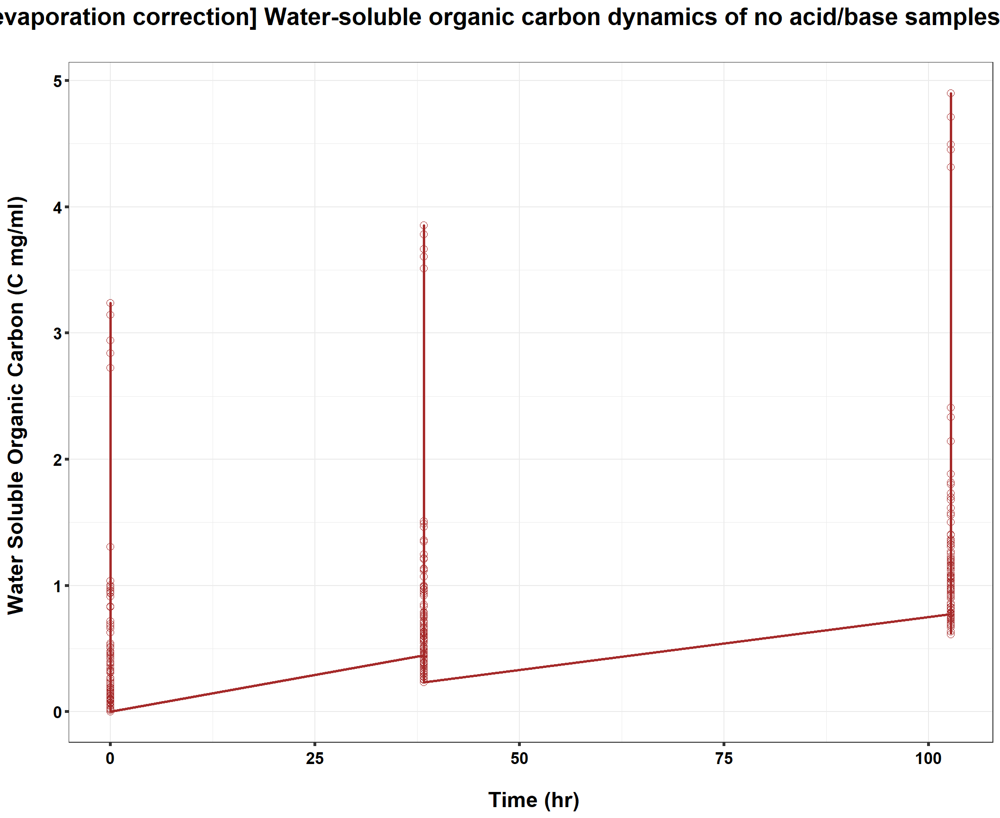
# plot blanks
# (2) plot separately only the H_mM == 0 samples
df_20ul_mcf_null <- df_20ul_mcf %>% filter(H_mM == 0, Sample_type == "Slurry")
ggplot(df_20ul_mcf_null, aes(x=Time_hours, y=TOC_mgml)) +
geom_point(size=3, shape=16, color = "brown") +
# geom_line(size=1, color='brown')+
# geom_errorbar(aes(ymin=Ave_TOC_mgml - Std_TOC_mgml, ymax=Ave_TOC_mgml + Std_TOC_mgml), width=.05)+
scale_fill_brewer(palette='Set2') +
ylab("Water Soluble Organic Carbon (C mg/ml) \n") +
xlab("\n Time (hr)") +
# scale_y_continuous(breaks = seq(0,1.5,0.1), limits=c(0, 1.5))+
ggtitle("[Before evaporation correction] Water-soluble organic carbon dynamics of no acid/base samples (3 replicates) \n") +
# label
# geom_text(aes(label = round(Ave_TOC_mgml,3)), size = 3, vjust = -1.5, family="serif", show.legend = FALSE)+
mytheme_2d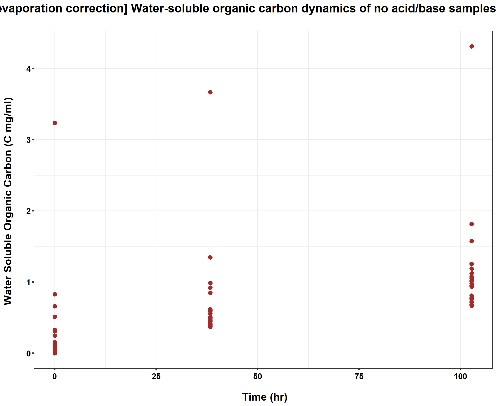
# (3) plot no nitrate samples
# df_20ul_mcf_nn <- df_20ul_mcf %>% filter(H_mM == 0, Titration_type == "No_Nitrate")
# # df_20ul_mcf$Titration_type
#
# ggplot(df_20ul_mcf_nn, aes(x=Time_hours, y=TOC_mgml)) +
# geom_point(size=3, shape=16, color = "brown") +
# # geom_line(size=1, color='brown')+
# # geom_errorbar(aes(ymin=Ave_TOC_mgml - Std_TOC_mgml, ymax=Ave_TOC_mgml + Std_TOC_mgml), width=.05)+
# scale_fill_brewer(palette='Set2') +
# ylab("Water Soluble Organic Carbon (C mg/ml) \n") +
# xlab("\n Time (hr)") +
# scale_y_continuous(breaks = seq(0,1.5,0.1), limits=c(0, 1.5))+
# ggtitle("[Before evaporation correction] Water-soluble organic carbon dynamics of no NO3- samples (3 replicates) \n") +
# # label
# # geom_text(aes(label = round(Ave_TOC_mgml,3)), size = 3, vjust = -1.5, family="serif", show.legend = FALSE)+
# mytheme_2d# for Crerar7 NO2, correction factor for T10 is
# 0.9825210
1.0751640/1.1076743 # NO2 T7 / T0[1] 0.97064990.9241254/1.1076743 # NO2 T10 / T0[1] 0.8342934# 0.9939772/1.0299439 # NO3 T7 <-- NO3 decreased so... I'm not using this.
# 0.9875936/1.0299439 # NO3 T10
# let's use NO2's evaporation factor
eva_correction_factor = 1.0751640/1.1076743
df_20ul_mcf_bcf_1 <- df_20ul_mcf %>% filter(Time_point == "T7") %>% mutate(TOC_mgml = TOC_mgml * eva_correction_factor)
eva_correction_factor = 0.9241254/1.1076743
df_20ul_mcf_bcf_2 <- df_20ul_mcf %>% filter(Time_point == "T10") %>% mutate(TOC_mgml = TOC_mgml * eva_correction_factor)
df_20ul_mcf_bcf_others <- df_20ul_mcf %>% filter(Time_point == "T0")
df_20ul_mcf_bcf <- rbind(df_20ul_mcf_bcf_1, df_20ul_mcf_bcf_2, df_20ul_mcf_bcf_others)
dim(df_20ul_mcf_bcf) #287[1] 287 22# Redo the plots
# (1) Water soluble organic C mg/ml
ggplot(df_20ul_mcf_bcf, aes(x=Time_hours, y=TOC_mgml)) +
geom_point(size=2.5, shape=21, color = "brown") +
geom_line(size=1, color='brown')+
# geom_errorbar(aes(ymin=Ave_TOC_mgml - Std_TOC_mgml, ymax=Ave_TOC_mgml + Std_TOC_mgml), width=.05)+
scale_fill_brewer(palette='Set2') +
ylab("Water Soluble Organic Carbon (C mg/ml) \n") +
xlab("\n Time (hr)") +
# scale_x_continuous(breaks = seq(0,16,1), limits=c(0, 16))+
#scale_y_continuous(breaks = seq(0,0.3,0.05), limits=c(0, 0.3))+
ggtitle("[After evaporation correction] Water-soluble organic carbon dynamics of no acid/base samples (3 replicates) \n") +
# label
# geom_text(aes(label = round(Ave_TOC_mgml,3)), size = 3, vjust = -1.5, family="serif", show.legend = FALSE)+
mytheme_2d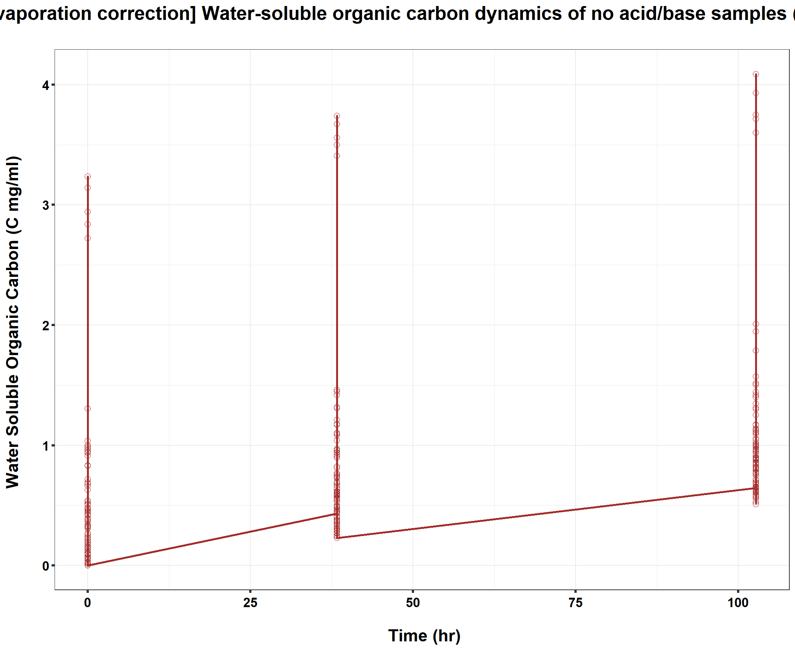
# (2) plot separately only the H_mM == 0 samples
df_20ul_mcf_bcf_null <- df_20ul_mcf_bcf %>% filter(H_mM == 0, Sample_type == "Slurry")
ggplot(df_20ul_mcf_bcf_null, aes(x=Time_hours, y=TOC_mgml)) +
geom_point(size=3, shape=16, color = "brown") +
# geom_line(size=1, color='brown')+
# geom_errorbar(aes(ymin=Ave_TOC_mgml - Std_TOC_mgml, ymax=Ave_TOC_mgml + Std_TOC_mgml), width=.05)+
scale_fill_brewer(palette='Set2') +
ylab("Water Soluble Organic Carbon (C mg/ml) \n") +
xlab("\n Time (hr)") +
# scale_y_continuous(breaks = seq(0,1.5,0.1), limits=c(0, 1.5))+
ggtitle("[After evaporation correction] Water-soluble organic carbon dynamics of no acid/base samples (3 replicates) \n") +
# label
# geom_text(aes(label = round(Ave_TOC_mgml,3)), size = 3, vjust = -1.5, family="serif", show.legend = FALSE)+
mytheme_2d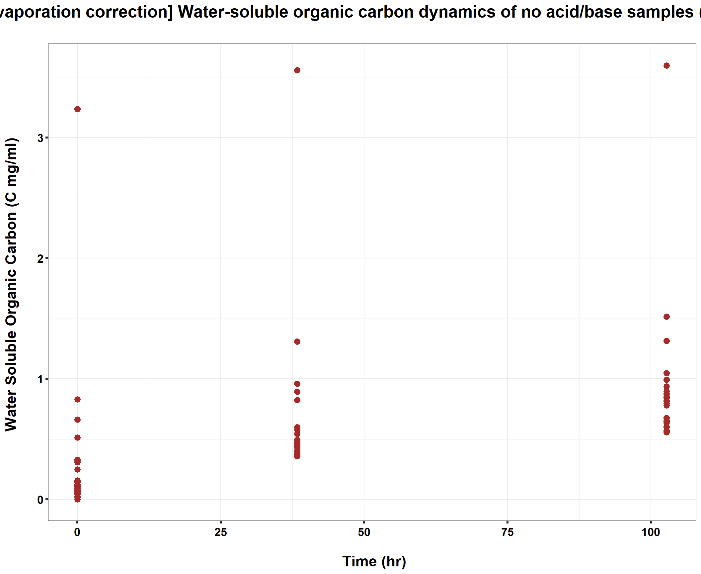
# (4) plot blanks
df_20ul_mcf_bcf_blk <- df_20ul_mcf_bcf %>% filter(Sample_type %in% c("Nitrite_Blank", "Nitrate_Blank", "Ammonium_Blank"))
# df_20ul_mcf$Titration_type
ggplot(df_20ul_mcf_bcf_blk, aes(x=Time_hours, y=TOC_mgml)) +
geom_point(size=3, shape=16, aes(color = Sample_type)) +
# geom_line(size=1, color='brown')+
# geom_errorbar(aes(ymin=Ave_TOC_mgml - Std_TOC_mgml, ymax=Ave_TOC_mgml + Std_TOC_mgml), width=.05)+
scale_fill_brewer(palette='Set2') +
ylab("Water Soluble Organic Carbon (C mg/ml) \n") +
xlab("\n Time (hr)") +
scale_y_continuous(breaks = seq(0,1.5,0.1), limits=c(0, 1.5))+
ggtitle("[After evaporation correction] Water-soluble organic carbon dynamics of blanks (3 replicates) \n") +
# label
# geom_text(aes(label = round(Ave_TOC_mgml,3)), size = 3, vjust = -1.5, family="serif", show.legend = FALSE)+
mytheme_2d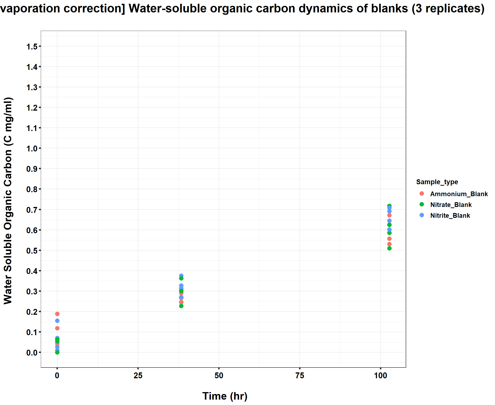
df_pH_import <- read.xlsx("data/220521_pH_Antibiotics_dose_effect_experiment.xlsx")
dim(df_pH_import)[1] 209 8colnames(df_pH_import)[1] "Soil" "Titration_type" "Unit" "H_mM"
[5] "Antibiotics_type" "Dose_ppm" "Time_point" "pH" # only get the pH (from T7 I believe)
df_pH_import <- df_pH_import %>% filter(Time_point %in% c("T0", "T7", "T10")) %>% select(Soil, Titration_type, Antibiotics_type, Dose_ppm, Unit, H_mM, pH ) %>% group_by(Soil, Titration_type, Antibiotics_type, Dose_ppm, Unit, H_mM) %>% summarize(pH = mean(pH))
colnames(df_pH_import)[1] "Soil" "Titration_type" "Antibiotics_type" "Dose_ppm"
[5] "Unit" "H_mM" "pH" dim(df_pH_import) # 81[1] 81 7# Let's left_join with the carbon measurements
df_20ul_pH <- df_20ul_mcf_bcf %>% select(-H_mM) %>% filter(!(Titration_type %in% c("Nitrate", "Nitrite", "Ammonium", "No_Nitrate"))) %>% left_join(df_pH_import, by = c("Soil"="Soil", "Titration_type"="Titration_type", "Antibiotics_type"="Antibiotics_type", "Unit"="Unit", "Dose_ppm"="Dose_ppm"))
dim(df_20ul_pH) # 108[1] 251 23# reorder factor
df_20ul_pH$Antibiotics_type <- factor(df_20ul_pH$Antibiotics_type, levels = c("CHL", "KAN", "STM","NYT","CHX","STM_CHX"))
# plot average and standard deviation
colnames(df_20ul_pH) [1] "Well" "Nitrite_input" "Nitrate_input" "Ammonium_input"
[5] "Soil" "Sample_type" "Titration_type" "Antibiotics_type"
[9] "Dose_ppm" "Unit" "Concentration_M" "Added_ul"
[13] "Time_point" "TOC_OD600" "TOC_mgml" "Time_minutes"
[17] "Time_hours" "Time_days" "H_mol" "Volume"
[21] "H_Molarity" "H_mM" "pH" dim(df_20ul_pH)[1] 251 23df_20ul_pH_ave <- df_20ul_pH %>% group_by(Soil, Titration_type, Unit, Sample_type, Antibiotics_type, Dose_ppm, H_mM, Time_point, Time_minutes, Time_hours, Time_days, pH) %>% summarise(TOC_mgml = mean(TOC_mgml)) %>% ungroup()
dim(df_20ul_pH_ave) # 84[1] 242 13# label with pH range
df_pH_label <- df_20ul_pH_ave %>% group_by(Titration_type, Unit) %>% summarize(pH_min = round(min(pH), 2), pH_max = round(max(pH), 2))
# df_pH_label$pH_max <- as.character()
df_pH_label %<>% unite(col='pH_range', c("pH_min","pH_max"), sep="-", remove=F)
df_pH_range <- df_20ul_pH_ave %>% left_join(df_pH_label, by =c("Titration_type"="Titration_type", "Unit"="Unit"))
dim(df_pH_range)[1] 242 16dim(df_20ul_pH_ave)[1] 242 13colnames()Error in is.data.frame(x): argument "x" is missing, with no default# make dose (2500 and 5000)
df_pH_range2 <- df_pH_range
df_pH_range2$Dose_ppm <- ifelse(df_pH_range2$Dose_ppm == 2500, 5000, df_pH_range2$Dose_ppm)
df_pH_range2$Dose_ppm <- ifelse(df_pH_range2$Dose_ppm == 5000, "2500 or 5000", df_pH_range2$Dose_ppm)
df_pH_range2$Dose_ppm <- factor(df_pH_range2$Dose_ppm, levels = c(0, 200, 1000, "2500 or 5000"))
df_pH_range2$Antibiotics_type <- factor(df_pH_range2$Antibiotics_type, levels = c("CHL", "KAN", "STM","NYT","CHX","STM_CHX"))
df_pH_range2 %<>% filter(Dose_ppm != 0)
# WSOC
ggplot(df_pH_range2, aes(x=Time_hours, y=TOC_mgml, color=Antibiotics_type, group=Antibiotics_type)) +
geom_point(size=2.5, shape=16) +
geom_line(size=1.2)+
# geom_errorbar(aes(ymin=NO3_mM - Std_NO3_mM, ymax=NO3_mM + Std_NO3_mM), width=.05)+
# scale_colour_gradientn(colours = col_pH(100)) +
# scale_color_manual(values=c("Black","Red","Blue", "Purple", "Brown")) +
ylab("Carbon (mg/ml) \n") +
xlab("Time (hr)") +
# scale_y_continuous(breaks = seq(0,0.3,0.05), limits=c(0, 0.3))+
# ggtitle("Antibiotics application x pH perturbation (pH at day2): 200ppm of Chloramphenicol(CHL), Nystatin(NYT) \n") +
# label
# geom_text(aes(label = round(NO3_mM,3)), size = 3, vjust = -1.5, family="serif", show.legend = FALSE)+
mytheme_2d +
facet_grid(Dose_ppm ~ pH_range) +
theme(strip.background = element_rect(colour="black", fill="white", size=0.1))+
theme(strip.text.x = element_text(size = 17))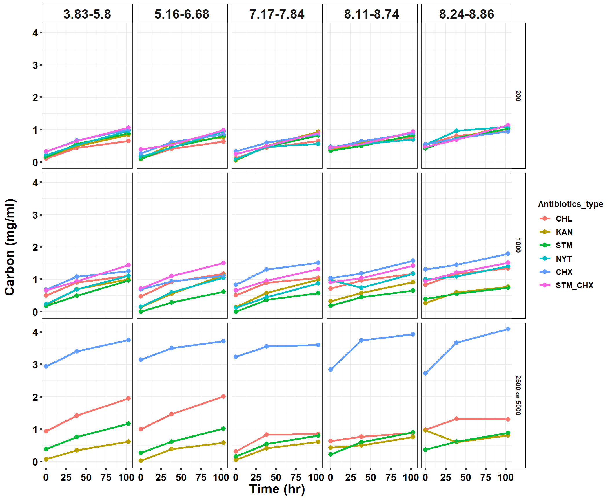
## let's only plot CHX
df_pH_range3 <- df_pH_range2
df_toc_chx <- df_pH_range3 %>% filter(Antibiotics_type == "CHX")
df_nodose <- df_pH_range %>% filter(Dose_ppm == 0)
df_toc_chx <- rbind(df_toc_chx, df_nodose)
df_toc_chx$Dose_ppm <- factor(df_toc_chx$Dose_ppm, levels = c(0, 200, 1000, "2500 or 5000"))
ggplot(df_toc_chx, aes(x=Time_hours, y=TOC_mgml, color=Dose_ppm, group=Dose_ppm)) +
geom_point(size=2.5, shape=16) +
geom_line(size=1.2)+
# geom_errorbar(aes(ymin=NO3_mM - Std_NO3_mM, ymax=NO3_mM + Std_NO3_mM), width=.05)+
# scale_colour_gradientn(colours = col_pH(100)) +
# scale_color_manual(values=c("Black","Red","Blue", "Purple", "Brown")) +
ylab("Carbon (mg/ml)") +
xlab("Time (hr)") +
# scale_y_continuous(breaks = seq(0,0.3,0.05), limits=c(0, 0.3))+
# ggtitle("Antibiotics application x pH perturbation (pH at day2): 200ppm of Chloramphenicol(CHL), Nystatin(NYT) \n") +
# label
# geom_text(aes(label = round(NO3_mM,3)), size = 3, vjust = -1.5, family="serif", show.legend = FALSE)+
mytheme_2d +
ggtitle("pH (Cycloheximide-treated)")+
facet_grid(. ~ pH_range) +
theme(strip.background = element_rect(colour="black", fill="white", size=0.1))+
theme(strip.text.x = element_text(size = 17))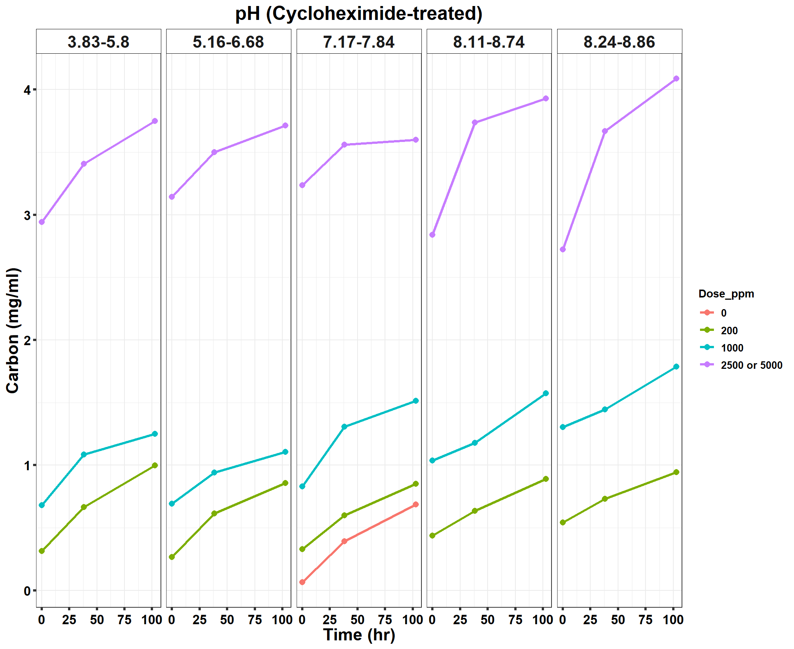
# other antibiotics
df_toc_chl <- df_pH_range3 %>% filter(Antibiotics_type == "CHL")
df_nodose <- df_pH_range %>% filter(Dose_ppm == 0)
df_toc_chl <- rbind(df_toc_chl, df_nodose)
df_toc_chl$Dose_ppm <- factor(df_toc_chl$Dose_ppm, levels = c(0, 200, 1000, "2500 or 5000"))
ggplot(df_toc_chl, aes(x=Time_hours, y=TOC_mgml, color=Dose_ppm, group=Dose_ppm)) +
geom_point(size=2.5, shape=16) +
geom_line(size=1.2)+
# geom_errorbar(aes(ymin=NO3_mM - Std_NO3_mM, ymax=NO3_mM + Std_NO3_mM), width=.05)+
# scale_colour_gradientn(colours = col_pH(100)) +
# scale_color_manual(values=c("Black","Red","Blue", "Purple", "Brown")) +
ylab("Carbon (mg/ml)") +
xlab("Time (hr)") +
# scale_y_continuous(breaks = seq(0,0.3,0.05), limits=c(0, 0.3))+
# ggtitle("Antibiotics application x pH perturbation (pH at day2): 200ppm of Chloramphenicol(CHL), Nystatin(NYT) \n") +
# label
# geom_text(aes(label = round(NO3_mM,3)), size = 3, vjust = -1.5, family="serif", show.legend = FALSE)+
mytheme_2d +
ggtitle("pH (Chloramphenicol-treated)")+
facet_grid(. ~ pH_range) +
theme(strip.background = element_rect(colour="black", fill="white", size=0.1))+
theme(strip.text.x = element_text(size = 17))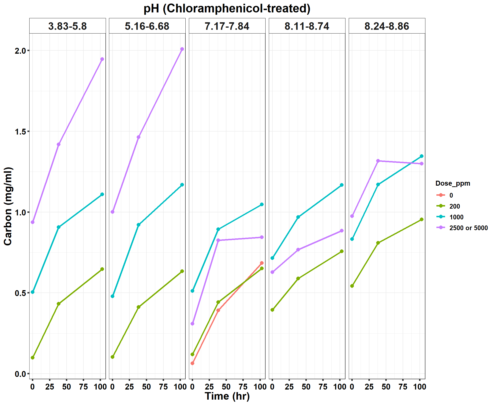
# other antibiotics
df_toc_stm <- df_pH_range3 %>% filter(Antibiotics_type == "STM")
df_nodose <- df_pH_range %>% filter(Dose_ppm == 0)
df_toc_stm <- rbind(df_toc_stm, df_nodose)
df_toc_stm$Dose_ppm <- factor(df_toc_stm$Dose_ppm, levels = c(0, 200, 1000, "2500 or 5000"))
ggplot(df_toc_stm, aes(x=Time_hours, y=TOC_mgml, color=Dose_ppm, group=Dose_ppm)) +
geom_point(size=2.5, shape=16) +
geom_line(size=1.2)+
# geom_errorbar(aes(ymin=NO3_mM - Std_NO3_mM, ymax=NO3_mM + Std_NO3_mM), width=.05)+
# scale_colour_gradientn(colours = col_pH(100)) +
# scale_color_manual(values=c("Black","Red","Blue", "Purple", "Brown")) +
ylab("Carbon (mg/ml)") +
xlab("Time (hr)") +
# scale_y_continuous(breaks = seq(0,0.3,0.05), limits=c(0, 0.3))+
# ggtitle("Antibiotics application x pH perturbation (pH at day2): 200ppm of Chloramphenicol(CHL), Nystatin(NYT) \n") +
# label
# geom_text(aes(label = round(NO3_mM,3)), size = 3, vjust = -1.5, family="serif", show.legend = FALSE)+
mytheme_2d +
ggtitle("pH (Streptomycin-treated)")+
facet_grid(. ~ pH_range) +
theme(strip.background = element_rect(colour="black", fill="white", size=0.1))+
theme(strip.text.x = element_text(size = 17))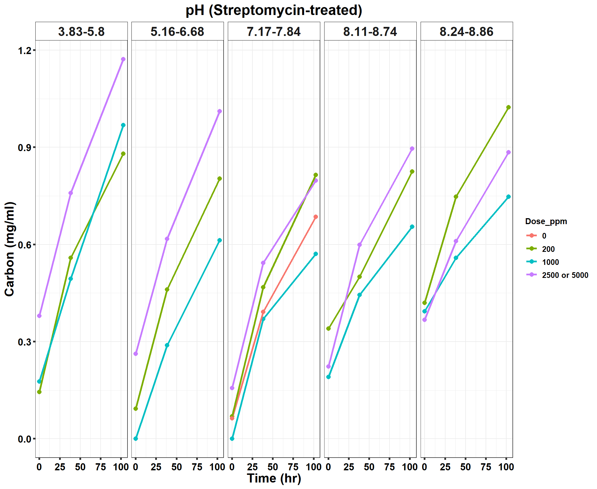
# Kanamycin
# other antibiotics
df_toc_kan <- df_pH_range3 %>% filter(Antibiotics_type == "KAN")
df_nodose <- df_pH_range %>% filter(Dose_ppm == 0)
df_toc_kan <- rbind(df_toc_kan, df_nodose)
df_toc_kan$Dose_ppm <- factor(df_toc_kan$Dose_ppm, levels = c(0, 200, 1000, "2500 or 5000"))
ggplot(df_toc_kan, aes(x=Time_hours, y=TOC_mgml, color=Dose_ppm, group=Dose_ppm)) +
geom_point(size=2.5, shape=16) +
geom_line(size=1.2)+
# geom_errorbar(aes(ymin=NO3_mM - Std_NO3_mM, ymax=NO3_mM + Std_NO3_mM), width=.05)+
# scale_colour_gradientn(colours = col_pH(100)) +
# scale_color_manual(values=c("Black","Red","Blue", "Purple", "Brown")) +
ylab("Carbon (mg/ml)") +
xlab("Time (hr)") +
# scale_y_continuous(breaks = seq(0,0.3,0.05), limits=c(0, 0.3))+
# ggtitle("Antibiotics application x pH perturbation (pH at day2): 200ppm of Chloramphenicol(CHL), Nystatin(NYT) \n") +
# label
# geom_text(aes(label = round(NO3_mM,3)), size = 3, vjust = -1.5, family="serif", show.legend = FALSE)+
mytheme_2d +
ggtitle("pH (Kanamycin-treated)")+
facet_grid(. ~ pH_range) +
theme(strip.background = element_rect(colour="black", fill="white", size=0.1))+
theme(strip.text.x = element_text(size = 17))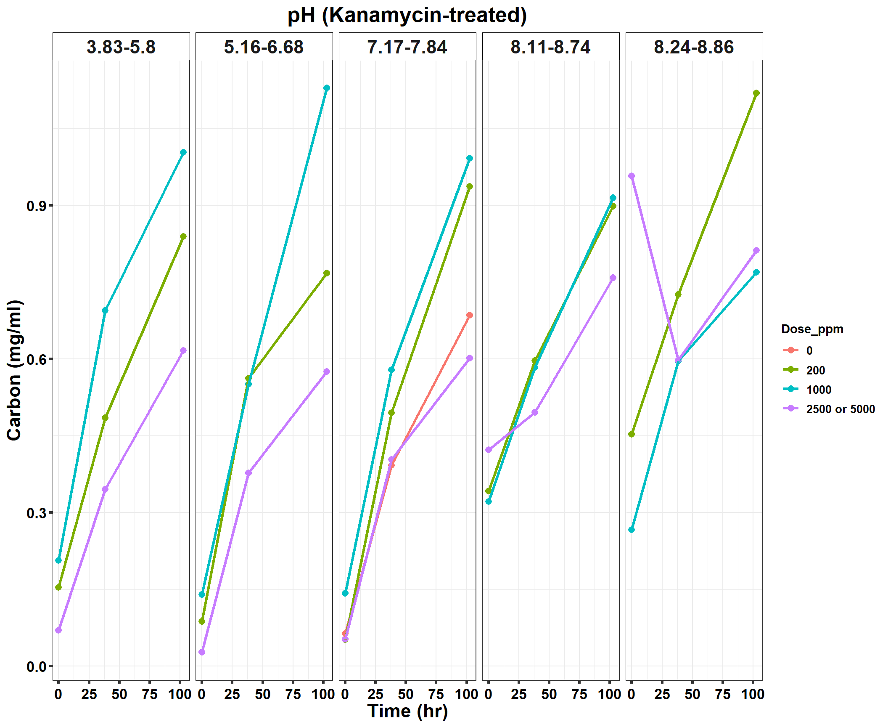
# Nystatin
# other antibiotics
df_toc_nyt <- df_pH_range3 %>% filter(Antibiotics_type == "NYT")
df_nodose <- df_pH_range %>% filter(Dose_ppm == 0)
df_toc_nyt <- rbind(df_toc_nyt, df_nodose)
df_toc_nyt$Dose_ppm <- factor(df_toc_nyt$Dose_ppm, levels = c(0, 200, 1000, "2500 or 5000"))
ggplot(df_toc_nyt, aes(x=Time_hours, y=TOC_mgml, color=Dose_ppm, group=Dose_ppm)) +
geom_point(size=2.5, shape=16) +
geom_line(size=1.2)+
# geom_errorbar(aes(ymin=NO3_mM - Std_NO3_mM, ymax=NO3_mM + Std_NO3_mM), width=.05)+
# scale_colour_gradientn(colours = col_pH(100)) +
# scale_color_manual(values=c("Black","Red","Blue", "Purple", "Brown")) +
ylab("Carbon (mg/ml)") +
xlab("Time (hr)") +
# scale_y_continuous(breaks = seq(0,0.3,0.05), limits=c(0, 0.3))+
# ggtitle("Antibiotics application x pH perturbation (pH at day2): 200ppm of Chloramphenicol(CHL), Nystatin(NYT) \n") +
# label
# geom_text(aes(label = round(NO3_mM,3)), size = 3, vjust = -1.5, family="serif", show.legend = FALSE)+
mytheme_2d +
ggtitle("pH (Nystatin-treated)")+
facet_grid(. ~ pH_range) +
theme(strip.background = element_rect(colour="black", fill="white", size=0.1))+
theme(strip.text.x = element_text(size = 17))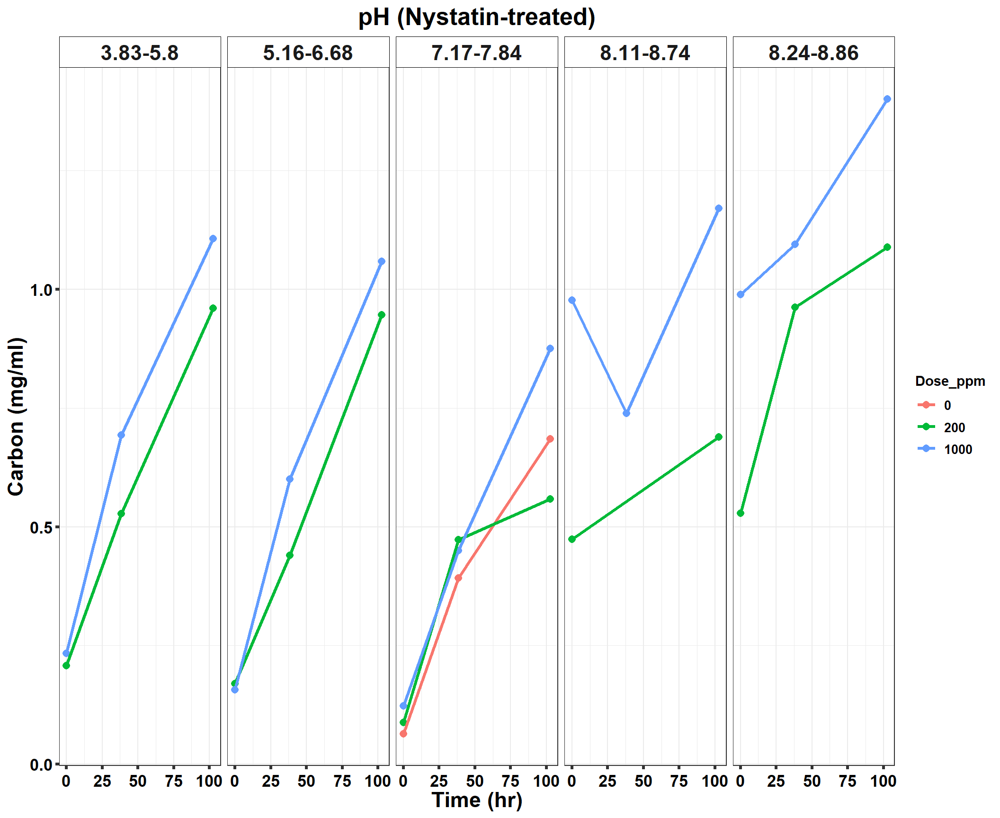
# STM_CHX
# other antibiotics
df_toc_STM_CHX <- df_pH_range3 %>% filter(Antibiotics_type == "STM_CHX")
df_nodose <- df_pH_range %>% filter(Dose_ppm == 0)
df_toc_STM_CHX <- rbind(df_toc_STM_CHX, df_nodose)
df_toc_STM_CHX$Dose_ppm <- factor(df_toc_STM_CHX$Dose_ppm, levels = c(0, 200, 1000, "2500 or 5000"))
ggplot(df_toc_STM_CHX, aes(x=Time_hours, y=TOC_mgml, color=Dose_ppm, group=Dose_ppm)) +
geom_point(size=2.5, shape=16) +
geom_line(size=1.2)+
# geom_errorbar(aes(ymin=NO3_mM - Std_NO3_mM, ymax=NO3_mM + Std_NO3_mM), width=.05)+
# scale_colour_gradientn(colours = col_pH(100)) +
# scale_color_manual(values=c("Black","Red","Blue", "Purple", "Brown")) +
ylab("Carbon (mg/ml)") +
xlab("Time (hr)") +
# scale_y_continuous(breaks = seq(0,0.3,0.05), limits=c(0, 0.3))+
# ggtitle("Antibiotics application x pH perturbation (pH at day2): 200ppm of Chloramphenicol(CHL), Nystatin(NYT) \n") +
# label
# geom_text(aes(label = round(NO3_mM,3)), size = 3, vjust = -1.5, family="serif", show.legend = FALSE)+
mytheme_2d +
ggtitle("pH (Streptomycin&Cycloheximide-treated)")+
facet_grid(. ~ pH_range) +
theme(strip.background = element_rect(colour="black", fill="white", size=0.1))+
theme(strip.text.x = element_text(size = 17))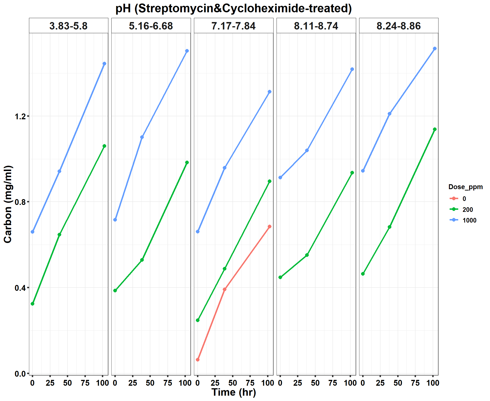
df_pH_import <- read.xlsx("data/220521_pH_Antibiotics_dose_effect_experiment.xlsx")
dim(df_pH_import)[1] 209 8colnames(df_pH_import)[1] "Soil" "Titration_type" "Unit" "H_mM"
[5] "Antibiotics_type" "Dose_ppm" "Time_point" "pH" # only get the pH (from T7 I believe)
df_pH_import <- df_pH_import %>% filter(Time_point %in% c("T0", "T7", "T10")) %>% select(Soil, Titration_type, Antibiotics_type, Dose_ppm, Unit, H_mM, pH ) %>% group_by(Soil, Titration_type, Antibiotics_type, Dose_ppm, Unit, H_mM) %>% summarize(pH = mean(pH))
colnames(df_pH_import)[1] "Soil" "Titration_type" "Antibiotics_type" "Dose_ppm"
[5] "Unit" "H_mM" "pH" dim(df_pH_import) # 81[1] 81 7# Let's left_join with the carbon measurements
df_20ul_pH <- df_20ul_mcf_bcf %>% select(-H_mM) %>% filter(!(Titration_type %in% c("Nitrate", "Nitrite", "Ammonium", "No_Nitrate"))) %>% left_join(df_pH_import, by = c("Soil"="Soil", "Titration_type"="Titration_type", "Antibiotics_type"="Antibiotics_type", "Unit"="Unit", "Dose_ppm"="Dose_ppm"))
dim(df_20ul_pH) # 108[1] 251 23# reorder factor
df_20ul_pH$Antibiotics_type <- factor(df_20ul_pH$Antibiotics_type, levels = c("CHL", "KAN", "STM","NYT","CHX","STM_CHX"))
# plot average and standard deviation
colnames(df_20ul_pH) [1] "Well" "Nitrite_input" "Nitrate_input" "Ammonium_input"
[5] "Soil" "Sample_type" "Titration_type" "Antibiotics_type"
[9] "Dose_ppm" "Unit" "Concentration_M" "Added_ul"
[13] "Time_point" "TOC_OD600" "TOC_mgml" "Time_minutes"
[17] "Time_hours" "Time_days" "H_mol" "Volume"
[21] "H_Molarity" "H_mM" "pH" dim(df_20ul_pH)[1] 251 23df_20ul_pH_ave <- df_20ul_pH %>% group_by(Soil, Titration_type, Unit, Sample_type, Antibiotics_type, Dose_ppm, H_mM, Time_point, Time_minutes, Time_hours, Time_days, pH) %>% summarise(TOC_mgml = mean(TOC_mgml)) %>% ungroup()
dim(df_20ul_pH_ave) # 84[1] 242 13# label with pH range
df_pH_label <- df_20ul_pH_ave %>% group_by(Titration_type, Unit) %>% summarize(pH_min = round(min(pH), 2), pH_max = round(max(pH), 2))
# df_pH_label$pH_max <- as.character()
df_pH_label %<>% unite(col='pH_range', c("pH_min","pH_max"), sep="-", remove=F)
df_pH_range <- df_20ul_pH_ave %>% left_join(df_pH_label, by =c("Titration_type"="Titration_type", "Unit"="Unit"))
dim(df_pH_range)[1] 242 16dim(df_20ul_pH_ave)[1] 242 13colnames()Error in is.data.frame(x): argument "x" is missing, with no default# subtract blank
colnames(df_20ul_mcf_bcf_blk) [1] "Well" "Nitrite_input" "Nitrate_input" "Ammonium_input"
[5] "Soil" "Sample_type" "Titration_type" "Antibiotics_type"
[9] "Dose_ppm" "Unit" "Concentration_M" "Added_ul"
[13] "Time_point" "TOC_OD600" "TOC_mgml" "Time_minutes"
[17] "Time_hours" "Time_days" "H_mol" "Volume"
[21] "H_Molarity" "H_mM" df_blank_TOC <- df_20ul_mcf_bcf_blk %>% group_by(Time_point) %>% summarize(Blank_TOC_mgml = mean(TOC_mgml))
df_pH_bnk_sub <- df_pH_range
df_pH_bnk_sub %<>% left_join(df_blank_TOC, by=c("Time_point"="Time_point")) %>% mutate(TOC_mgml = TOC_mgml - Blank_TOC_mgml)
# make dose (2500 and 5000)
df_pH_bnk_sub2 <- df_pH_bnk_sub
df_pH_bnk_sub2$Dose_ppm <- ifelse(df_pH_bnk_sub2$Dose_ppm == 2500, 5000, df_pH_bnk_sub2$Dose_ppm)
df_pH_bnk_sub2$Dose_ppm <- ifelse(df_pH_bnk_sub2$Dose_ppm == 5000, "2500 or 5000", df_pH_bnk_sub2$Dose_ppm)
df_pH_bnk_sub2$Dose_ppm <- factor(df_pH_bnk_sub2$Dose_ppm, levels = c(0, 200, 1000, "2500 or 5000"))
df_pH_bnk_sub2$Antibiotics_type <- factor(df_pH_bnk_sub2$Antibiotics_type, levels = c("CHL", "KAN", "STM","NYT","CHX","STM_CHX"))
df_pH_bnk_sub2 %<>% filter(Dose_ppm != 0)
# WSOC
ggplot(df_pH_bnk_sub2, aes(x=Time_hours, y=TOC_mgml, color=Antibiotics_type, group=Antibiotics_type)) +
geom_point(size=2.5, shape=16) +
geom_line(size=1.2)+
# geom_errorbar(aes(ymin=NO3_mM - Std_NO3_mM, ymax=NO3_mM + Std_NO3_mM), width=.05)+
# scale_colour_gradientn(colours = col_pH(100)) +
# scale_color_manual(values=c("Black","Red","Blue", "Purple", "Brown")) +
ylab("Carbon (mg/ml) \n") +
xlab("Time (hr)") +
# scale_y_continuous(breaks = seq(0,0.3,0.05), limits=c(0, 0.3))+
# ggtitle("Antibiotics application x pH perturbation (pH at day2): 200ppm of Chloramphenicol(CHL), Nystatin(NYT) \n") +
# label
# geom_text(aes(label = round(NO3_mM,3)), size = 3, vjust = -1.5, family="serif", show.legend = FALSE)+
mytheme_2d +
ggtitle("After blank subtraction")+
facet_grid(Dose_ppm ~ pH_range) +
theme(strip.background = element_rect(colour="black", fill="white", size=0.1))+
theme(strip.text.x = element_text(size = 17))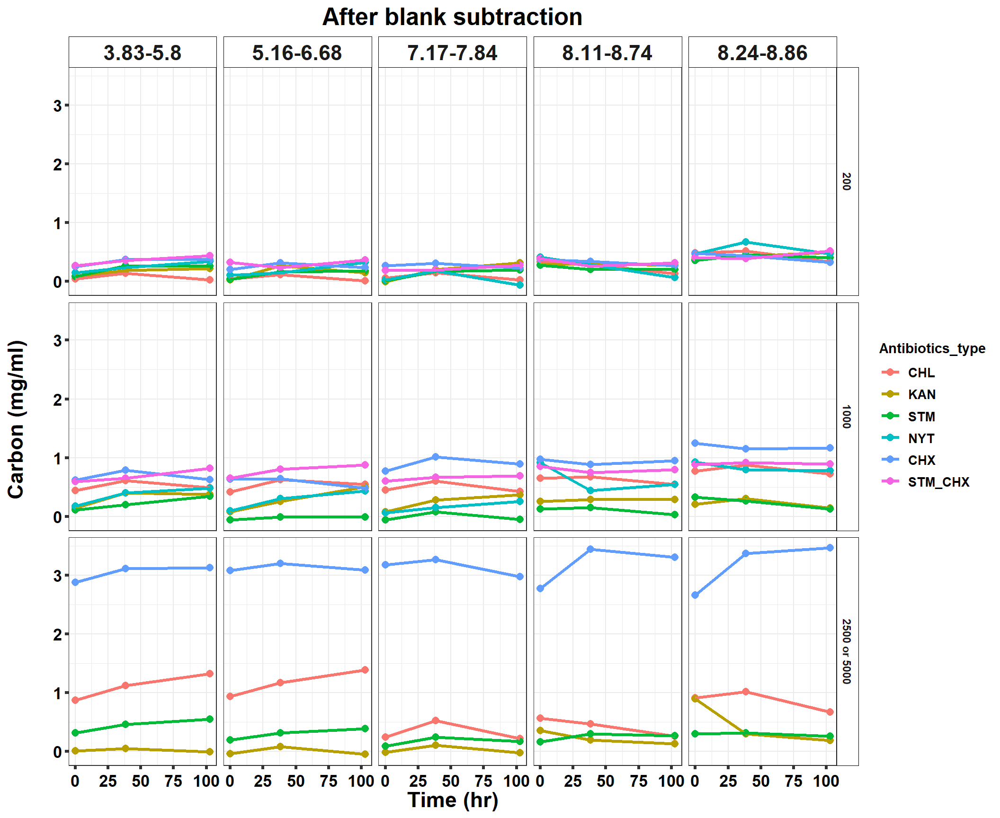
# plot only 200, 1000
df_pH_bnk_sub2 %>% filter(Dose_ppm %in% c(0, 200, 1000))# A tibble: 179 x 17
Soil Titration_type Unit Sample_type Antibiotics_type Dose_ppm H_mM
<chr> <chr> <dbl> <chr> <fct> <fct> <dbl>
1 Barneveld2 HCl 0 Slurry CHL 200 0
2 Barneveld2 HCl 0 Slurry CHL 200 0
3 Barneveld2 HCl 0 Slurry CHL 200 0
4 Barneveld2 HCl 0 Slurry CHL 1000 0
5 Barneveld2 HCl 0 Slurry CHL 1000 0
6 Barneveld2 HCl 0 Slurry CHL 1000 0
7 Barneveld2 HCl 0 Slurry KAN 200 0
8 Barneveld2 HCl 0 Slurry KAN 200 0
9 Barneveld2 HCl 0 Slurry KAN 200 0
10 Barneveld2 HCl 0 Slurry KAN 1000 0
# ... with 169 more rows, and 10 more variables: Time_point <chr>,
# Time_minutes <chr>, Time_hours <dbl>, Time_days <dbl>, pH <dbl>,
# TOC_mgml <dbl>, pH_range <chr>, pH_min <dbl>, pH_max <dbl>,
# Blank_TOC_mgml <dbl>ggplot(df_pH_bnk_sub2 %>% filter(Dose_ppm %in% c(0, 200, 1000)), aes(x=Time_hours, y=TOC_mgml, color=Antibiotics_type, group=Antibiotics_type)) +
geom_point(size=2.5, shape=16) +
geom_line(size=1.2)+
# geom_errorbar(aes(ymin=NO3_mM - Std_NO3_mM, ymax=NO3_mM + Std_NO3_mM), width=.05)+
# scale_colour_gradientn(colours = col_pH(100)) +
# scale_color_manual(values=c("Black","Red","Blue", "Purple", "Brown")) +
ylab("Carbon (mg/ml) \n") +
xlab("Time (hr)") +
# scale_y_continuous(breaks = seq(0,0.3,0.05), limits=c(0, 0.3))+
# ggtitle("Antibiotics application x pH perturbation (pH at day2): 200ppm of Chloramphenicol(CHL), Nystatin(NYT) \n") +
# label
# geom_text(aes(label = round(NO3_mM,3)), size = 3, vjust = -1.5, family="serif", show.legend = FALSE)+
mytheme_2d +
ggtitle("After blank subtraction")+
facet_grid(Dose_ppm ~ pH_range) +
theme(strip.background = element_rect(colour="black", fill="white", size=0.1))+
theme(strip.text.x = element_text(size = 17))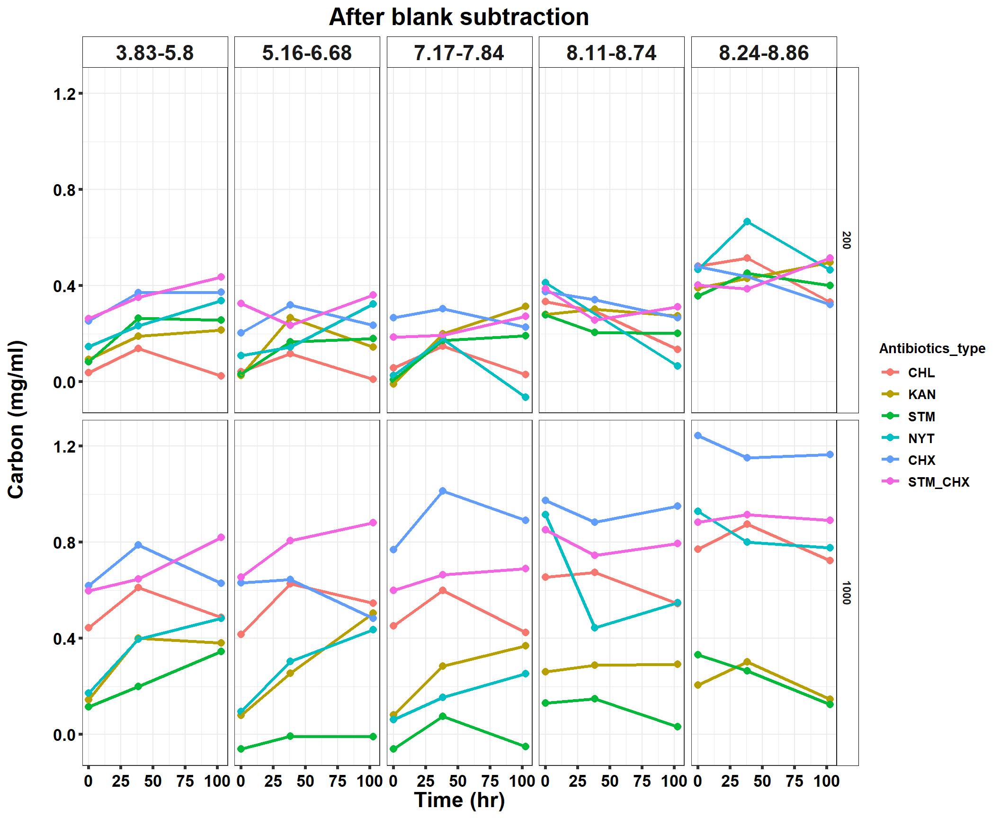
## let's only plot CHX
df_pH_bnk_sub3 <- df_pH_bnk_sub2
df_toc_chx <- df_pH_bnk_sub3 %>% filter(Antibiotics_type == "CHX")
df_nodose <- df_pH_bnk_sub %>% filter(Dose_ppm == 0)
df_toc_chx <- rbind(df_toc_chx, df_nodose)
df_toc_chx$Dose_ppm <- factor(df_toc_chx$Dose_ppm, levels = c(0, 200, 1000, "2500 or 5000"))
ggplot(df_toc_chx, aes(x=Time_hours, y=TOC_mgml, color=Dose_ppm, group=Dose_ppm)) +
geom_point(size=2.5, shape=16) +
geom_line(size=1.2)+
# geom_errorbar(aes(ymin=NO3_mM - Std_NO3_mM, ymax=NO3_mM + Std_NO3_mM), width=.05)+
# scale_colour_gradientn(colours = col_pH(100)) +
# scale_color_manual(values=c("Black","Red","Blue", "Purple", "Brown")) +
ylab("Carbon (mg/ml)") +
xlab("Time (hr)") +
# scale_y_continuous(breaks = seq(0,0.3,0.05), limits=c(0, 0.3))+
# ggtitle("Antibiotics application x pH perturbation (pH at day2): 200ppm of Chloramphenicol(CHL), Nystatin(NYT) \n") +
# label
# geom_text(aes(label = round(NO3_mM,3)), size = 3, vjust = -1.5, family="serif", show.legend = FALSE)+
mytheme_2d +
ggtitle("pH (Cycloheximide-treated)")+
facet_grid(. ~ pH_range) +
theme(strip.background = element_rect(colour="black", fill="white", size=0.1))+
theme(strip.text.x = element_text(size = 17))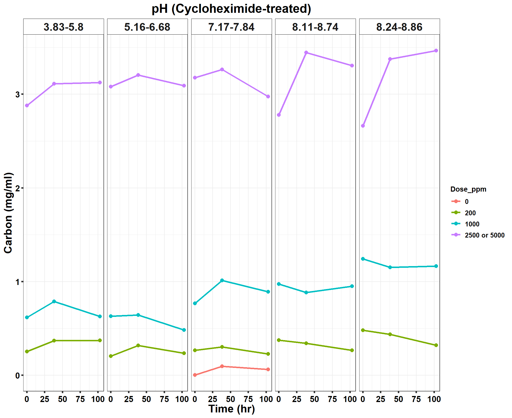
# other antibiotics
df_toc_chl <- df_pH_bnk_sub3 %>% filter(Antibiotics_type == "CHL")
df_nodose <- df_pH_bnk_sub %>% filter(Dose_ppm == 0)
df_toc_chl <- rbind(df_toc_chl, df_nodose)
df_toc_chl$Dose_ppm <- factor(df_toc_chl$Dose_ppm, levels = c(0, 200, 1000, "2500 or 5000"))
ggplot(df_toc_chl, aes(x=Time_hours, y=TOC_mgml, color=Dose_ppm, group=Dose_ppm)) +
geom_point(size=2.5, shape=16) +
geom_line(size=1.2)+
# geom_errorbar(aes(ymin=NO3_mM - Std_NO3_mM, ymax=NO3_mM + Std_NO3_mM), width=.05)+
# scale_colour_gradientn(colours = col_pH(100)) +
# scale_color_manual(values=c("Black","Red","Blue", "Purple", "Brown")) +
ylab("Carbon (mg/ml)") +
xlab("Time (hr)") +
# scale_y_continuous(breaks = seq(0,0.3,0.05), limits=c(0, 0.3))+
# ggtitle("Antibiotics application x pH perturbation (pH at day2): 200ppm of Chloramphenicol(CHL), Nystatin(NYT) \n") +
# label
# geom_text(aes(label = round(NO3_mM,3)), size = 3, vjust = -1.5, family="serif", show.legend = FALSE)+
mytheme_2d +
ggtitle("pH (Chloramphenicol-treated)")+
facet_grid(. ~ pH_range) +
theme(strip.background = element_rect(colour="black", fill="white", size=0.1))+
theme(strip.text.x = element_text(size = 17))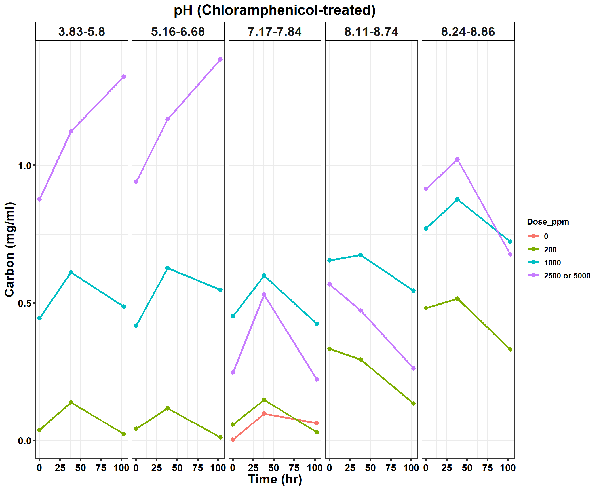
Nitrate, nitrite
df_kyle2 <- read.xlsx("data/220421_Griess_antibiotics_experiment_to_kyle_remove_blanks_add_pH.xlsx")
df_pH_effect <- df_kyle2 %>% filter(!(Titration_type %in% c("Nitrate", "Nitrite", "Ammonium", "No_Nitrate")))
dim(df_pH_effect) # 354[1] 354 27df_pH_effect$Titration_type [1] "HCl" "HCl" "NaOH" "NaOH" "HCl" "HCl" "HCl" "HCl" "NaOH" "NaOH"
[11] "HCl" "HCl" "HCl" "HCl" "NaOH" "NaOH" "HCl" "HCl" "HCl" "NaOH"
[21] "NaOH" "HCl" "HCl" "HCl" "HCl" "NaOH" "NaOH" "HCl" "HCl" "HCl"
[31] "HCl" "NaOH" "NaOH" "HCl" "HCl" "HCl" "HCl" "HCl" "NaOH" "NaOH"
[41] "HCl" "HCl" "HCl" "HCl" "NaOH" "NaOH" "HCl" "HCl" "HCl" "HCl"
[51] "NaOH" "NaOH" "HCl" "HCl" "HCl" "HCl" "HCl" "HCl" "HCl" "NaOH"
[61] "NaOH" "HCl" "HCl" "HCl" "HCl" "NaOH" "NaOH" "HCl" "HCl" "HCl"
[71] "HCl" "HCl" "NaOH" "NaOH" "HCl" "HCl" "HCl" "HCl" "NaOH" "NaOH"
[81] "HCl" "HCl" "HCl" "HCl" "NaOH" "NaOH" "HCl" "HCl" "HCl" "NaOH"
[91] "NaOH" "HCl" "HCl" "HCl" "HCl" "NaOH" "NaOH" "HCl" "HCl" "HCl"
[101] "HCl" "NaOH" "NaOH" "HCl" "HCl" "HCl" "HCl" "HCl" "NaOH" "NaOH"
[111] "HCl" "HCl" "HCl" "HCl" "NaOH" "NaOH" "HCl" "HCl" "HCl" "HCl"
[121] "NaOH" "NaOH" "HCl" "HCl" "HCl" "NaOH" "NaOH" "HCl" "HCl" "HCl"
[131] "HCl" "NaOH" "NaOH" "HCl" "HCl" "HCl" "HCl" "NaOH" "NaOH" "HCl"
[141] "HCl" "HCl" "HCl" "HCl" "NaOH" "NaOH" "HCl" "HCl" "HCl" "HCl"
[151] "HCl" "HCl" "HCl" "HCl" "NaOH" "HCl" "HCl" "HCl" "NaOH" "NaOH"
[161] "HCl" "HCl" "HCl" "HCl" "NaOH" "NaOH" "HCl" "HCl" "HCl" "HCl"
[171] "NaOH" "NaOH" "HCl" "HCl" "HCl" "HCl" "HCl" "NaOH" "NaOH" "HCl"
[181] "HCl" "HCl" "HCl" "NaOH" "NaOH" "HCl" "HCl" "HCl" "HCl" "NaOH"
[191] "NaOH" "HCl" "HCl" "HCl" "NaOH" "NaOH" "HCl" "HCl" "HCl" "HCl"
[201] "NaOH" "NaOH" "HCl" "HCl" "HCl" "HCl" "NaOH" "NaOH" "HCl" "HCl"
[211] "HCl" "HCl" "HCl" "NaOH" "NaOH" "HCl" "HCl" "HCl" "HCl" "NaOH"
[221] "NaOH" "HCl" "HCl" "HCl" "HCl" "NaOH" "NaOH" "HCl" "HCl" "HCl"
[231] "NaOH" "NaOH" "HCl" "HCl" "HCl" "HCl" "NaOH" "NaOH" "HCl" "HCl"
[241] "HCl" "HCl" "NaOH" "NaOH" "HCl" "HCl" "HCl" "HCl" "NaOH" "NaOH"
[251] "HCl" "HCl" "HCl" "HCl" "NaOH" "NaOH" "HCl" "HCl" "HCl" "HCl"
[261] "NaOH" "NaOH" "HCl" "HCl" "HCl" "NaOH" "NaOH" "HCl" "HCl" "HCl"
[271] "HCl" "NaOH" "NaOH" "HCl" "HCl" "HCl" "HCl" "NaOH" "NaOH" "HCl"
[281] "HCl" "HCl" "HCl" "HCl" "NaOH" "NaOH" "HCl" "HCl" "HCl" "HCl"
[291] "NaOH" "NaOH" "HCl" "HCl" "HCl" "HCl" "NaOH" "NaOH" "HCl" "HCl"
[301] "HCl" "NaOH" "NaOH" "HCl" "HCl" "HCl" "HCl" "NaOH" "NaOH" "HCl"
[311] "HCl" "HCl" "HCl" "NaOH" "NaOH" "HCl" "HCl" "HCl" "HCl" "HCl"
[321] "NaOH" "NaOH" "HCl" "HCl" "HCl" "HCl" "NaOH" "NaOH" "HCl" "HCl"
[331] "HCl" "HCl" "NaOH" "NaOH" "HCl" "HCl" "HCl" "NaOH" "NaOH" "HCl"
[341] "HCl" "HCl" "HCl" "NaOH" "NaOH" "HCl" "HCl" "HCl" "HCl" "NaOH"
[351] "NaOH" "HCl" "HCl" "HCl" df_pH_effect$Antibiotics_type [1] "CHL" "CHL" "CHL" "CHL" "CHL" "CHL" "CHL"
[8] "CHL" "CHL" "CHL" "CHL" "NYT" "NYT" "NYT"
[15] "NYT" "NYT" "NYT" "None" "NYT" "NYT" "NYT"
[22] "NYT" "NYT" "None" "None" "None" "None" "CHL_NYT"
[29] "CHL_NYT" "None" "None" "None" "None" "CHL_NYT" "None"
[36] "None" "CHL" "CHL" "CHL" "CHL" "CHL" "CHL"
[43] "CHL" "CHL" "CHL" "CHL" "CHL" "NYT" "NYT"
[50] "NYT" "NYT" "NYT" "NYT" "None" "NYT" "NYT"
[57] "NYT" "None" "None" "None" "None" "CHL_NYT" "CHL_NYT"
[64] "None" "None" "None" "None" "CHL_NYT" "None" "None"
[71] "CHL" "CHL" "CHL" "CHL" "CHL" "CHL" "CHL"
[78] "CHL" "CHL" "CHL" "CHL" "NYT" "NYT" "NYT"
[85] "NYT" "NYT" "NYT" "None" "NYT" "NYT" "NYT"
[92] "NYT" "NYT" "None" "None" "None" "None" "CHL_NYT"
[99] "CHL_NYT" "None" "None" "None" "None" "CHL_NYT" "None"
[106] "None" "CHL" "CHL" "CHL" "CHL" "CHL" "CHL"
[113] "CHL" "CHL" "CHL" "CHL" "CHL" "NYT" "NYT"
[120] "NYT" "NYT" "NYT" "NYT" "None" "NYT" "NYT"
[127] "NYT" "NYT" "NYT" "None" "None" "None" "None"
[134] "CHL_NYT" "CHL_NYT" "None" "None" "None" "None" "CHL_NYT"
[141] "None" "None" "CHL" "CHL" "CHL" "CHL" "CHL"
[148] "CHL" "CHL" "CHL" "CHL" "NYT" "NYT" "NYT"
[155] "NYT" "NYT" "None" "NYT" "NYT" "NYT" "NYT"
[162] "NYT" "None" "None" "None" "None" "CHL_NYT" "CHL_NYT"
[169] "None" "None" "None" "None" "CHL_NYT" "None" "None"
[176] "CHL" "CHL" "CHL" "CHL" "CHL" "CHL" "CHL"
[183] "CHL" "CHL" "CHL" "CHL" "NYT" "NYT" "NYT"
[190] "NYT" "NYT" "NYT" "None" "NYT" "NYT" "NYT"
[197] "NYT" "NYT" "None" "None" "None" "None" "CHL_NYT"
[204] "CHL_NYT" "None" "None" "None" "None" "CHL_NYT" "None"
[211] "None" "CHL" "CHL" "CHL" "CHL" "CHL" "CHL"
[218] "CHL" "CHL" "CHL" "CHL" "CHL" "NYT" "NYT"
[225] "NYT" "NYT" "NYT" "NYT" "None" "NYT" "NYT"
[232] "NYT" "NYT" "NYT" "None" "None" "None" "None"
[239] "CHL_NYT" "CHL_NYT" "None" "None" "None" "None" "CHL_NYT"
[246] "None" "None" "CHL" "CHL" "CHL" "CHL" "CHL"
[253] "CHL" "CHL" "CHL" "CHL" "CHL" "NYT" "NYT"
[260] "NYT" "NYT" "NYT" "NYT" "None" "NYT" "NYT"
[267] "NYT" "NYT" "NYT" "None" "None" "None" "None"
[274] "CHL_NYT" "CHL_NYT" "None" "None" "None" "None" "CHL_NYT"
[281] "None" "None" "CHL" "CHL" "CHL" "CHL" "CHL"
[288] "CHL" "CHL" "CHL" "CHL" "CHL" "CHL" "NYT"
[295] "NYT" "NYT" "NYT" "NYT" "NYT" "None" "NYT"
[302] "NYT" "NYT" "NYT" "NYT" "None" "None" "None"
[309] "None" "CHL_NYT" "CHL_NYT" "None" "None" "None" "None"
[316] "CHL_NYT" "None" "None" "CHL" "CHL" "CHL" "CHL"
[323] "CHL" "CHL" "CHL" "CHL" "CHL" "CHL" "CHL"
[330] "NYT" "NYT" "NYT" "NYT" "NYT" "NYT" "None"
[337] "NYT" "NYT" "NYT" "NYT" "NYT" "None" "None"
[344] "None" "None" "CHL_NYT" "CHL_NYT" "None" "None" "None"
[351] "None" "CHL_NYT" "None" "None" df_pH_effect %>% filter(Time_point == "LBA_T0") Well Nitrite_input Nitrate_input Ammonium_input Soil
1 A01 0 2 0 LaBaghWoods_pH6.66
2 A02 0 2 0 LaBaghWoods_pH6.66
3 A03 0 2 0 LaBaghWoods_pH6.66
4 A04 0 2 0 LaBaghWoods_pH6.66
5 A05 0 2 0 LaBaghWoods_pH6.66
6 A06 0 2 0 LaBaghWoods_pH6.66
7 B01 0 2 0 LaBaghWoods_pH6.66
8 B02 0 2 0 LaBaghWoods_pH6.66
9 B03 0 2 0 LaBaghWoods_pH6.66
10 B04 0 2 0 LaBaghWoods_pH6.66
11 B05 0 2 0 LaBaghWoods_pH6.66
12 B06 0 2 0 LaBaghWoods_pH6.66
13 C01 0 2 0 LaBaghWoods_pH6.66
14 C02 0 2 0 LaBaghWoods_pH6.66
15 C03 0 2 0 LaBaghWoods_pH6.66
16 C04 0 2 0 LaBaghWoods_pH6.66
17 C05 0 2 0 LaBaghWoods_pH6.66
18 C06 0 2 0 LaBaghWoods_pH6.66
19 D01 0 2 0 LaBaghWoods_pH6.66
20 D02 0 2 0 LaBaghWoods_pH6.66
21 D03 0 2 0 LaBaghWoods_pH6.66
22 D04 0 2 0 LaBaghWoods_pH6.66
23 D05 0 2 0 LaBaghWoods_pH6.66
24 D06 0 2 0 LaBaghWoods_pH6.66
25 E01 0 2 0 LaBaghWoods_pH6.66
26 E02 0 2 0 LaBaghWoods_pH6.66
27 E03 0 2 0 LaBaghWoods_pH6.66
28 E04 0 2 0 LaBaghWoods_pH6.66
29 E05 0 2 0 LaBaghWoods_pH6.66
30 E06 0 2 0 LaBaghWoods_pH6.66
31 F01 0 2 0 LaBaghWoods_pH6.66
32 F02 0 2 0 LaBaghWoods_pH6.66
33 F03 0 2 0 LaBaghWoods_pH6.66
34 F04 0 2 0 LaBaghWoods_pH6.66
35 F05 0 2 0 LaBaghWoods_pH6.66
36 F06 0 2 0 LaBaghWoods_pH6.66
Sample_type Titration_type Antibiotics_type Unit Concentration_M Added_ul
1 Slurry HCl CHL 2 1 20
2 Slurry HCl CHL 6 3 20
3 Slurry NaOH CHL 2 1 -20
4 Slurry NaOH CHL 6 3 -20
5 Slurry HCl CHL 0 0 20
6 Slurry HCl CHL 0 0 20
7 Slurry HCl CHL 4 2 20
8 Slurry HCl CHL 8 4 20
9 Slurry NaOH CHL 4 2 -20
10 Slurry NaOH CHL 8 4 -20
11 Slurry HCl CHL 0 0 20
12 Slurry HCl NYT 2 1 20
13 Slurry HCl NYT 4 2 20
14 Slurry HCl NYT 8 4 20
15 Slurry NaOH NYT 4 2 -20
16 Slurry NaOH NYT 8 4 -20
17 Slurry HCl NYT 0 0 20
18 Slurry HCl None 2 1 20
19 Slurry HCl NYT 6 3 20
20 Slurry NaOH NYT 2 1 -20
21 Slurry NaOH NYT 6 3 -20
22 Slurry HCl NYT 0 0 20
23 Slurry HCl NYT 0 0 20
24 Slurry HCl None 4 2 20
25 Slurry HCl None 6 3 20
26 Slurry NaOH None 2 1 -20
27 Slurry NaOH None 6 3 -20
28 Slurry HCl CHL_NYT 0 0 20
29 Slurry HCl CHL_NYT 0 0 20
30 Slurry HCl None 0 0 20
31 Slurry HCl None 8 4 20
32 Slurry NaOH None 4 2 -20
33 Slurry NaOH None 8 4 -20
34 Slurry HCl CHL_NYT 0 0 20
35 Slurry HCl None 0 0 20
36 Slurry HCl None 0 0 20
Time_point NO2_OD540 NO2NO3_OD540 NO2_mM NO2NO3_mM NO3_mM
1 LBA_T0 0.00430 0.86470 0.013894041 2.013917 2.310196
2 LBA_T0 0.00375 0.89920 0.012982108 2.101806 2.412383
3 LBA_T0 0.01160 0.83550 0.026001940 1.939973 2.214007
4 LBA_T0 0.01885 0.82070 0.038034405 1.902647 2.160118
5 LBA_T0 0.00260 0.84035 0.011075478 1.952227 2.241586
6 LBA_T0 0.00100 0.77845 0.008423088 1.796651 2.064546
7 LBA_T0 0.00340 0.88860 0.012401810 2.074741 2.381691
8 LBA_T0 0.00440 0.85365 0.014059851 1.985887 2.277719
9 LBA_T0 0.01925 0.81970 0.038698483 1.900129 2.156616
10 LBA_T0 0.01760 0.84950 0.035959309 1.975375 2.245867
11 LBA_T0 0.00345 0.86865 0.012484708 2.023950 2.323038
12 LBA_T0 0.00305 0.83410 0.011821529 1.936438 2.222704
13 LBA_T0 0.00445 0.78455 0.014142757 1.811904 2.076985
14 LBA_T0 0.00550 0.85645 0.015883861 1.992984 2.284261
15 LBA_T0 0.01645 0.79690 0.034050417 1.842837 2.094727
16 LBA_T0 0.01550 0.84875 0.032473647 1.973476 2.246817
17 LBA_T0 0.00530 0.85260 0.015552210 1.983226 2.273306
18 LBA_T0 0.00440 0.81810 0.014059851 1.896101 2.174166
19 LBA_T0 0.00365 0.84200 0.012816307 1.956398 2.244829
20 LBA_T0 0.01325 0.82415 0.028739706 1.911339 2.178516
21 LBA_T0 0.01705 0.82690 0.035046337 1.918271 2.180830
22 LBA_T0 0.00350 0.87175 0.012567607 2.031830 2.332051
23 LBA_T0 0.00490 0.85180 0.014888925 1.981200 2.271566
24 LBA_T0 0.00260 0.84100 0.011075478 1.953870 2.243481
25 LBA_T0 0.00255 0.83295 0.010992586 1.933534 2.220102
26 LBA_T0 0.01375 0.84455 0.029569409 1.962847 2.237175
27 LBA_T0 0.01485 0.78935 0.031394879 1.823919 2.075299
28 LBA_T0 0.00240 0.86225 0.010743910 2.007697 2.305860
29 LBA_T0 0.00425 0.85805 0.013811136 1.997041 2.290808
30 LBA_T0 0.00520 0.75615 0.015386387 1.741034 1.994127
31 LBA_T0 0.00475 0.85035 0.014640199 1.977527 2.267555
32 LBA_T0 0.01580 0.84415 0.032971561 1.961835 2.232943
33 LBA_T0 0.01680 0.80460 0.034631364 1.862159 2.116488
34 LBA_T0 0.00415 0.86395 0.013645327 2.012012 2.308224
35 LBA_T0 0.00340 0.86825 0.012401810 2.022934 2.321940
36 LBA_T0 0.00460 0.81910 0.014391477 1.898618 2.176771
Time_minutes Time_hours Time_days H_mol Volume H_Molarity H_mM
1 0 0 0 2e-05 1.90366 0.01050608 10.50608
2 0 0 0 6e-05 1.90366 0.03151823 31.51823
3 0 0 0 -2e-05 1.90366 -0.01050608 -10.50608
4 0 0 0 -6e-05 1.90366 -0.03151823 -31.51823
5 0 0 0 0e+00 1.90366 0.00000000 0.00000
6 0 0 0 0e+00 1.90366 0.00000000 0.00000
7 0 0 0 4e-05 1.90366 0.02101216 21.01216
8 0 0 0 8e-05 1.90366 0.04202431 42.02431
9 0 0 0 -4e-05 1.90366 -0.02101216 -21.01216
10 0 0 0 -8e-05 1.90366 -0.04202431 -42.02431
11 0 0 0 0e+00 1.90366 0.00000000 0.00000
12 0 0 0 2e-05 1.90366 0.01050608 10.50608
13 0 0 0 4e-05 1.90366 0.02101216 21.01216
14 0 0 0 8e-05 1.90366 0.04202431 42.02431
15 0 0 0 -4e-05 1.90366 -0.02101216 -21.01216
16 0 0 0 -8e-05 1.90366 -0.04202431 -42.02431
17 0 0 0 0e+00 1.90366 0.00000000 0.00000
18 0 0 0 2e-05 1.90366 0.01050608 10.50608
19 0 0 0 6e-05 1.90366 0.03151823 31.51823
20 0 0 0 -2e-05 1.90366 -0.01050608 -10.50608
21 0 0 0 -6e-05 1.90366 -0.03151823 -31.51823
22 0 0 0 0e+00 1.90366 0.00000000 0.00000
23 0 0 0 0e+00 1.90366 0.00000000 0.00000
24 0 0 0 4e-05 1.90366 0.02101216 21.01216
25 0 0 0 6e-05 1.90366 0.03151823 31.51823
26 0 0 0 -2e-05 1.90366 -0.01050608 -10.50608
27 0 0 0 -6e-05 1.90366 -0.03151823 -31.51823
28 0 0 0 0e+00 1.90366 0.00000000 0.00000
29 0 0 0 0e+00 1.90366 0.00000000 0.00000
30 0 0 0 0e+00 1.90366 0.00000000 0.00000
31 0 0 0 8e-05 1.90366 0.04202431 42.02431
32 0 0 0 -4e-05 1.90366 -0.02101216 -21.01216
33 0 0 0 -8e-05 1.90366 -0.04202431 -42.02431
34 0 0 0 0e+00 1.90366 0.00000000 0.00000
35 0 0 0 0e+00 1.90366 0.00000000 0.00000
36 0 0 0 0e+00 1.90366 0.00000000 0.00000
Correction_factor_NO2 Correction_factor_NO3 pH
1 1.143276 1.029944 5.781
2 1.143276 1.029944 4.027
3 1.143276 1.029944 8.159
4 1.143276 1.029944 8.520
5 1.143276 1.029944 7.625
6 1.143276 1.029944 7.625
7 1.143276 1.029944 4.628
8 1.143276 1.029944 3.438
9 1.143276 1.029944 8.375
10 1.143276 1.029944 8.592
11 1.143276 1.029944 7.625
12 1.143276 1.029944 6.574
13 1.143276 1.029944 4.640
14 1.143276 1.029944 3.474
15 1.143276 1.029944 8.387
16 1.143276 1.029944 8.688
17 1.143276 1.029944 7.803
18 1.143276 1.029944 6.514
19 1.143276 1.029944 3.979
20 1.143276 1.029944 8.111
21 1.143276 1.029944 8.508
22 1.143276 1.029944 7.803
23 1.143276 1.029944 7.803
24 1.143276 1.029944 4.916
25 1.143276 1.029944 3.967
26 1.143276 1.029944 8.195
27 1.143276 1.029944 8.532
28 1.143276 1.029944 7.727
29 1.143276 1.029944 7.727
30 1.143276 1.029944 7.631
31 1.143276 1.029944 3.955
32 1.143276 1.029944 8.399
33 1.143276 1.029944 8.664
34 1.143276 1.029944 7.727
35 1.143276 1.029944 7.631
36 1.143276 1.029944 7.631# reorder factor
df_pH_effect$Antibiotics_type <- factor(df_pH_effect$Antibiotics_type, levels = c("None", "CHL", "NYT", "CHL_NYT", "Autoclaved"))
# plot average and standard deviation
colnames(df_pH_effect) [1] "Well" "Nitrite_input" "Nitrate_input"
[4] "Ammonium_input" "Soil" "Sample_type"
[7] "Titration_type" "Antibiotics_type" "Unit"
[10] "Concentration_M" "Added_ul" "Time_point"
[13] "NO2_OD540" "NO2NO3_OD540" "NO2_mM"
[16] "NO2NO3_mM" "NO3_mM" "Time_minutes"
[19] "Time_hours" "Time_days" "H_mol"
[22] "Volume" "H_Molarity" "H_mM"
[25] "Correction_factor_NO2" "Correction_factor_NO3" "pH" dim(df_pH_effect)[1] 354 27df_pH_effect_ave <- df_pH_effect %>% group_by(Soil, Titration_type, Unit, Sample_type, Antibiotics_type, H_mM, Time_point, Time_minutes, Time_hours, Time_days, pH) %>% summarise(Std_NO2_mM = sd(NO2_mM), Std_NO3_mM = sd(NO3_mM), NO2_mM = mean(NO2_mM), NO3_mM = mean(NO3_mM)) %>% ungroup()
dim(df_pH_effect_ave) # 284[1] 274 15# label with pH range
df_pH_label <- df_pH_effect_ave %>% group_by(Titration_type, Unit) %>% summarize(pH_min = min(pH), pH_max = max(pH))
# df_pH_label$pH_max <- as.character()
df_pH_label %<>% unite(col='pH_range', c("pH_min","pH_max"), sep="-", remove=F)
df_pH_range <- df_pH_effect_ave %>% left_join(df_pH_label, by =c("Titration_type"="Titration_type", "Unit"="Unit"))
# nitrate
p_A <- ggplot(df_pH_range, aes(x=Time_hours, y=NO3_mM, color=Antibiotics_type, group=Antibiotics_type)) +
geom_point(size=2.5, shape=16) +
geom_line(size=1.2)+
geom_errorbar(aes(ymin=NO3_mM - Std_NO3_mM, ymax=NO3_mM + Std_NO3_mM), width=.05)+
# scale_colour_gradientn(colours = col_pH(100)) +
scale_color_manual(values=c("Black","Red","Blue", "Purple", "Brown")) +
ylab("NO3- (mM) \n") +
xlab("\n Time (hr)") +
# scale_y_continuous(breaks = seq(0,0.3,0.05), limits=c(0, 0.3))+
# ggtitle("Antibiotics application x pH perturbation (pH at day2): 200ppm of Chloramphenicol(CHL), Nystatin(NYT), CHL+NYT(CHL_NYT) \n") +
# label
# geom_text(aes(label = round(NO3_mM,3)), size = 3, vjust = -1.5, family="serif", show.legend = FALSE)+
mytheme_2d +
facet_wrap(. ~ pH_range, nrow=1) +
theme(strip.background = element_rect(colour="black", fill="white", size=0.1))
p_A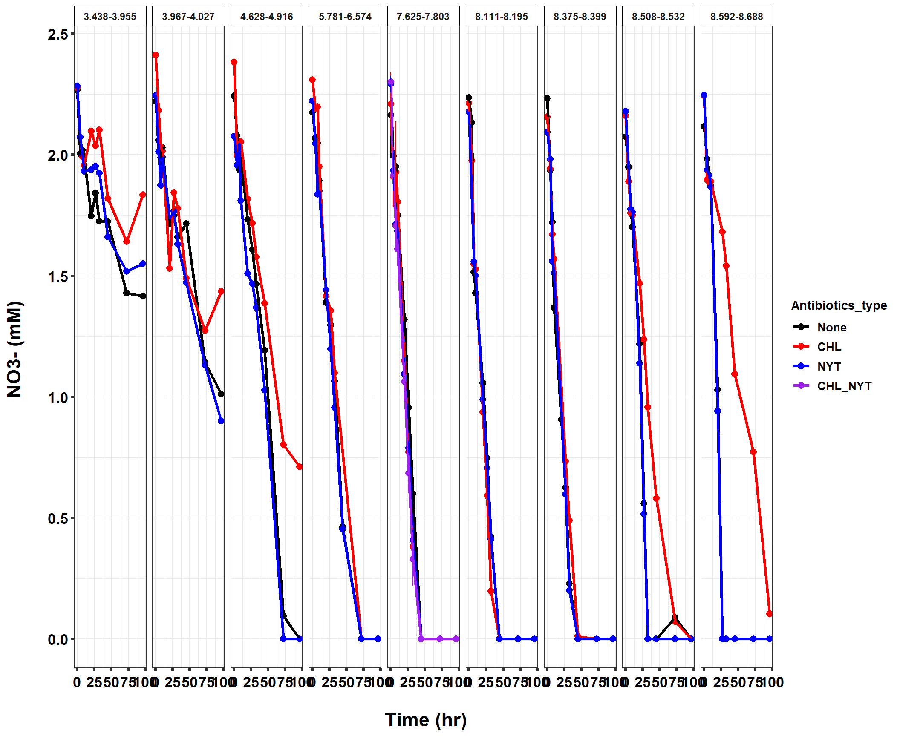
# nitrite
p_I <- ggplot(df_pH_range, aes(x=Time_hours, y=NO2_mM, color=Antibiotics_type, group=Antibiotics_type)) +
geom_point(size=2.5, shape=16) +
geom_line(size=1.2)+
geom_errorbar(aes(ymin=NO2_mM - Std_NO2_mM, ymax=NO2_mM + Std_NO2_mM), width=.05)+
# scale_colour_gradientn(colours = col_pH(100)) +
scale_color_manual(values=c("Black","Red","Blue", "Purple", "Brown")) +
ylab("NO2- (mM) \n") +
xlab("\n Time (hr)") +
# scale_y_continuous(breaks = seq(0,0.3,0.05), limits=c(0, 0.3))+
# ggtitle("Antibiotics application x pH perturbation (pH at day2): 200ppm of Chloramphenicol(CHL), Nystatin(NYT), CHL+NYT(CHL_NYT) \n") +
# label
# geom_text(aes(label = round(NO2_mM,3)), size = 3, vjust = -1.5, family="serif", show.legend = FALSE)+
mytheme_2d+
facet_wrap(. ~ pH_range, nrow=1) +
theme(strip.background = element_rect(colour="black", fill="white", size=0.1))
p_I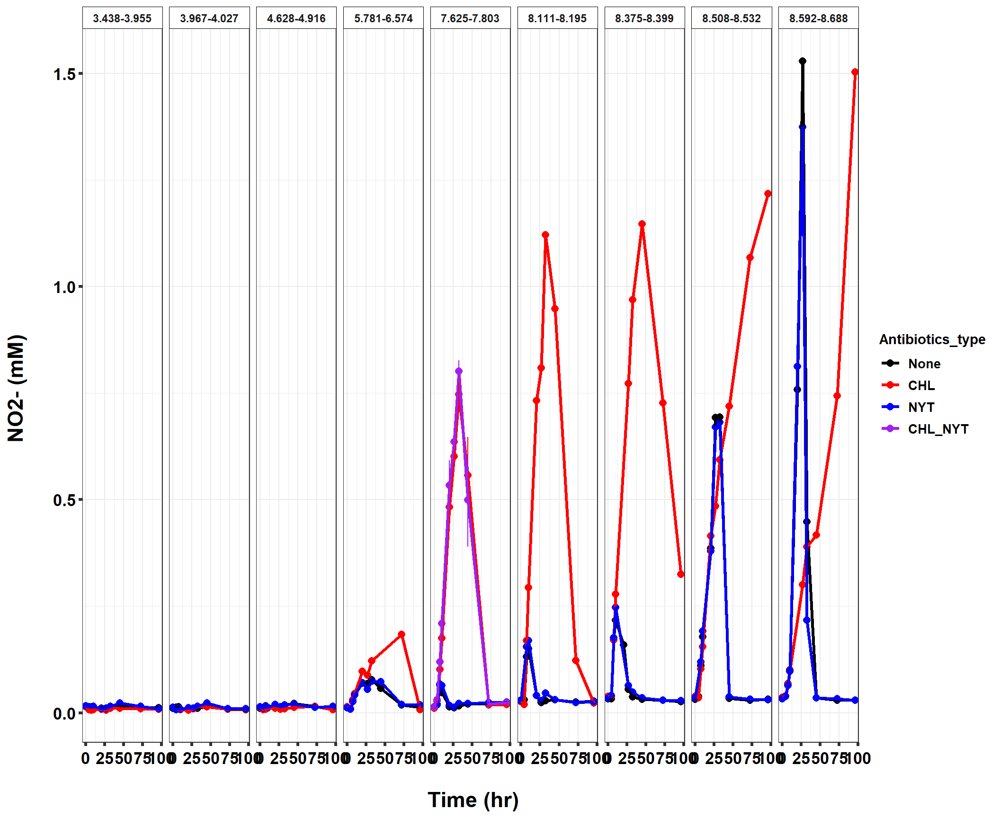
legend = gtable_filter(ggplotGrob(p_A), "guide-box")Error in gtable_filter(ggplotGrob(p_A), "guide-box"): could not find function "gtable_filter"grid.arrange(arrangeGrob(p_A+xlab(NULL)+theme(legend.position="none"),
p_I+xlab(NULL)+theme(legend.position="none")+theme(strip.background = element_blank(), strip.text = element_blank(), strip.text.x = element_blank()),
p_C+xlab(NULL)+theme(legend.position="none")+theme(strip.background = element_blank(), strip.text = element_blank(), strip.text.x = element_blank())
, nrow=3,
top = textGrob("Antibiotics application x pH perturbation (pH at day2): 200ppm of Chloramphenicol(CHL), Nystatin(NYT)", vjust = 0.5, gp = gpar(fontface = "bold", cex = 1.5)),
# left = textGrob("Relative abundance of strains with opt_pH", vjust = 0.5, rot=90, gp = gpar(fontface = "bold", cex = 1.5)),
bottom = textGrob("Time (hr)", vjust = 0, gp = gpar(fontface="bold", cex = 1.5)),
right = legend
))Error in grid.arrange(arrangeGrob(p_A + xlab(NULL) + theme(legend.position = "none"), : could not find function "grid.arrange"grid.arrange(arrangeGrob(p_A+xlab(NULL)+theme(legend.position="none"),
p_I+xlab(NULL)+theme(legend.position="none")+theme(strip.background = element_blank(), strip.text = element_blank(), strip.text.x = element_blank()), nrow=2,
top = textGrob("Antibiotics application x pH perturbation (pH at day2): 200ppm of Chloramphenicol(CHL), Nystatin(NYT)", vjust = 0.5, gp = gpar(fontface = "bold", cex = 1.5)),
# left = textGrob("Relative abundance of strains with opt_pH", vjust = 0.5, rot=90, gp = gpar(fontface = "bold", cex = 1.5)),
bottom = textGrob("Time (hr)", vjust = 0, gp = gpar(fontface="bold", cex = 1.5)),
right = legend
))Error in grid.arrange(arrangeGrob(p_A + xlab(NULL) + theme(legend.position = "none"), : could not find function "grid.arrange"df_pH_range_NH4 <- read.xlsx("data/220421_Ammonia_df_pH_range.xlsx")
# reorder factor
df_pH_range_NH4$Antibiotics_type <- factor(df_pH_range_NH4$Antibiotics_type, levels = c("None", "CHL", "NYT", "CHL_NYT", "Autoclaved"))
# WSOC
p_NH4 <- ggplot(df_pH_range_NH4, aes(x=Time_hours, y=NH4_mM, color=Antibiotics_type, group=Antibiotics_type)) +
geom_point(size=2.5, shape=16) +
geom_line(size=1.2)+
# geom_errorbar(aes(ymin=NO3_mM - Std_NO3_mM, ymax=NO3_mM + Std_NO3_mM), width=.05)+
# scale_colour_gradientn(colours = col_pH(100)) +
scale_color_manual(values=c("Black","Red","Blue", "Purple", "Brown")) +
ylab("NH4+ (mM) \n") +
xlab("\n Time (hr)") +
# scale_y_continuous(breaks = seq(0,0.3,0.05), limits=c(0, 0.3))+
# ggtitle("Antibiotics application x pH perturbation (pH at day2): 200ppm of Chloramphenicol(CHL), Nystatin(NYT) \n") +
# label
# geom_text(aes(label = round(NO3_mM,3)), size = 3, vjust = -1.5, family="serif", show.legend = FALSE)+
mytheme_2d +
facet_wrap(. ~ pH_range, nrow=1) +
theme(strip.background = element_rect(colour="black", fill="white", size=0.1))
p_NH4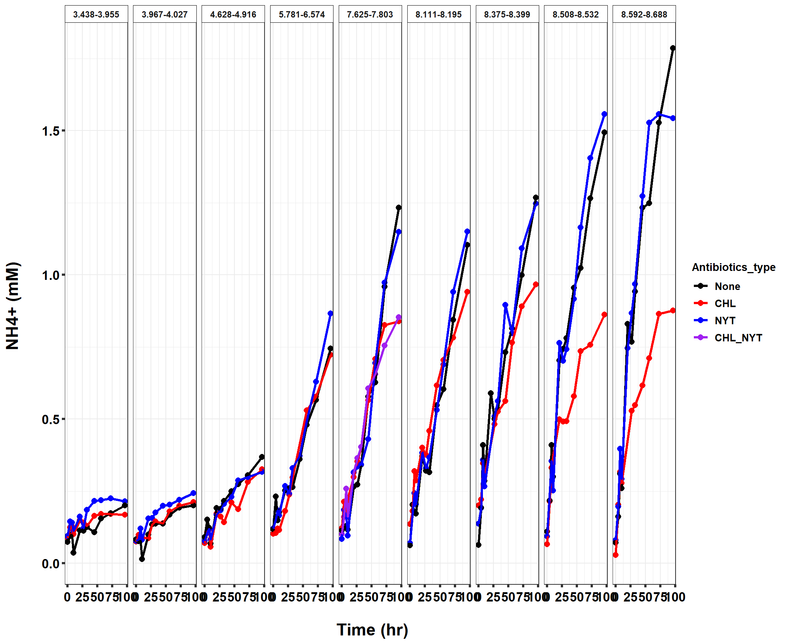
grid.arrange(arrangeGrob(p_A+xlab(NULL)+theme(legend.position="none"),
p_I+xlab(NULL)+theme(legend.position="none")+theme(strip.background = element_blank(), strip.text = element_blank(), strip.text.x = element_blank()),
p_NH4+xlab(NULL)+theme(legend.position="none")+theme(strip.background = element_blank(), strip.text = element_blank(), strip.text.x = element_blank()),
p_C+xlab(NULL)+theme(legend.position="none")+theme(strip.background = element_blank(), strip.text = element_blank(), strip.text.x = element_blank())
, nrow=4,
top = textGrob("Antibiotics application x pH perturbation (pH at day2): 200ppm of Chloramphenicol(CHL), Nystatin(NYT)", vjust = 0.5, gp = gpar(fontface = "bold", cex = 1.5)),
# left = textGrob("Relative abundance of strains with opt_pH", vjust = 0.5, rot=90, gp = gpar(fontface = "bold", cex = 1.5)),
bottom = textGrob("Time (hr)", vjust = 0, gp = gpar(fontface="bold", cex = 1.5)),
right = legend
))Error in grid.arrange(arrangeGrob(p_A + xlab(NULL) + theme(legend.position = "none"), : could not find function "grid.arrange"
sessionInfo()R version 4.0.3 (2020-10-10)
Platform: x86_64-w64-mingw32/x64 (64-bit)
Running under: Windows 10 x64 (build 22000)
Matrix products: default
locale:
[1] LC_COLLATE=English_United States.1252
[2] LC_CTYPE=English_United States.1252
[3] LC_MONETARY=English_United States.1252
[4] LC_NUMERIC=C
[5] LC_TIME=English_United States.1252
attached base packages:
[1] stats graphics grDevices utils datasets methods base
other attached packages:
[1] rmarkdown_2.9 ggpubr_0.4.0 ggrepel_0.9.1 ape_5.5
[5] openxlsx_4.2.3 devtools_2.4.0 usethis_2.0.1 gtools_3.8.2
[9] reshape2_1.4.4 readxl_1.3.1 magrittr_2.0.1 forcats_0.5.1
[13] stringr_1.4.0 purrr_0.3.4 readr_1.4.0 tidyr_1.1.3
[17] tibble_3.0.4 tidyverse_1.3.1 vegan_2.5-7 lattice_0.20-41
[21] permute_0.9-5 RColorBrewer_1.1-2 ggplot2_3.3.5 dplyr_1.0.5
[25] workflowr_1.6.2
loaded via a namespace (and not attached):
[1] colorspace_2.0-0 ggsignif_0.6.2 ellipsis_0.3.2 rio_0.5.27
[5] rprojroot_2.0.2 fs_1.5.0 rstudioapi_0.13 farver_2.1.0
[9] remotes_2.4.0 fansi_0.4.2 lubridate_1.7.10 xml2_1.3.2
[13] splines_4.0.3 cachem_1.0.4 knitr_1.37 pkgload_1.2.1
[17] jsonlite_1.7.2 broom_0.7.9 cluster_2.1.0 dbplyr_2.1.1
[21] compiler_4.0.3 httr_1.4.2 backports_1.2.1 assertthat_0.2.1
[25] Matrix_1.2-18 fastmap_1.1.0 cli_3.0.1 later_1.2.0
[29] htmltools_0.5.1.1 prettyunits_1.1.1 tools_4.0.3 gtable_0.3.0
[33] glue_1.4.2 Rcpp_1.0.8.3 carData_3.0-4 cellranger_1.1.0
[37] jquerylib_0.1.4 vctrs_0.3.8 nlme_3.1-149 xfun_0.29
[41] ps_1.6.0 testthat_3.0.2 rvest_1.0.1 lifecycle_1.0.0
[45] rstatix_0.7.0 MASS_7.3-53 scales_1.1.1 hms_1.1.0
[49] promises_1.2.0.1 parallel_4.0.3 yaml_2.2.1 curl_4.3.2
[53] memoise_2.0.0 sass_0.4.0 stringi_1.5.3 highr_0.9
[57] desc_1.3.0 pkgbuild_1.2.0 zip_2.1.1 rlang_0.4.10
[61] pkgconfig_2.0.3 evaluate_0.14 labeling_0.4.2 tidyselect_1.1.1
[65] processx_3.5.1 plyr_1.8.6 R6_2.5.0 generics_0.1.0
[69] DBI_1.1.1 pillar_1.6.0 haven_2.4.1 whisker_0.4
[73] foreign_0.8-80 withr_2.4.2 mgcv_1.8-33 abind_1.4-5
[77] modelr_0.1.8 crayon_1.4.1 car_3.0-11 utf8_1.1.4
[81] grid_4.0.3 data.table_1.14.0 callr_3.7.0 git2r_0.28.0
[85] reprex_2.0.0 digest_0.6.27 httpuv_1.6.0 munsell_0.5.0
[89] bslib_0.2.5.1 sessioninfo_1.1.1